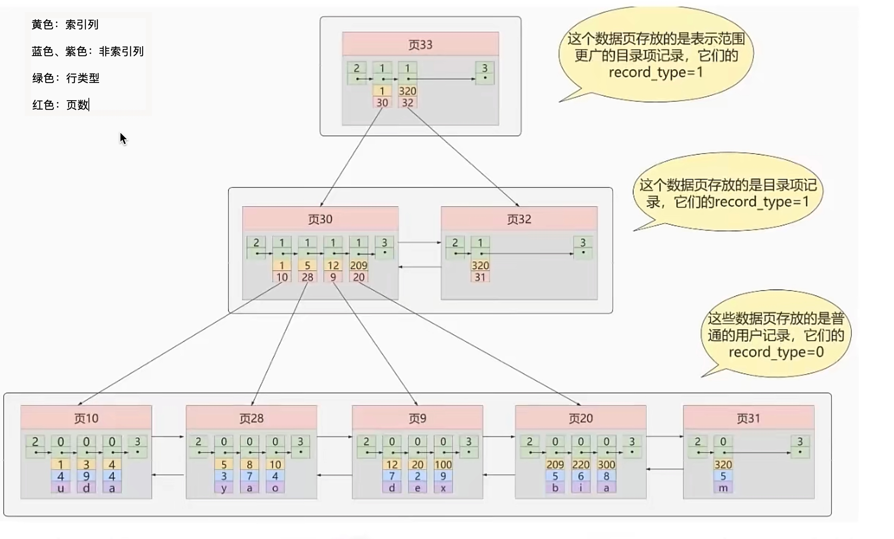

MySQL详解
MySQL
简介
MySQL是一个关系型数据库管理系统，由瑞典MySQL AB 公司开发，属于 Oracle 旗下产品。MySQL 是最流行的关系型数据库管理系统之一，在 WEB 应用方面，MySQL是最好的 RDBMS (Relational Database Management System，关系数据库管理系统) 应用软件之一。
非关系型数据库和关系型数据库
关系型数据库的优点
- 容易理解，因为它采用了关系模型来组织数据。
- 可以保持数据的一致性。
- 数据更新的开销比较小。
- 支持复杂查询（带 where 子句的查询）。
非关系型数据库（NOSQL）的优点
- 无需经过 SQL 层的解析，读写效率高。
- 基于键值对，读写性能很高，易于扩展
- 可以支持多种类型数据的存储，如图片，文档等等。
- 扩展（可分为内存性数据库以及文档型数据库，比如 Redis，MongoDB，HBase 等，适合场景：数据量大高可用的日志系统/地理位置存储系统）。
数据库三大范式
- 第一范式：数据表中的每一列（每个字段）都不可以再拆分。例如用户表，用户地址还可以拆分成国家、省份、市，这样才是符合第一范式的。
- 第二范式：在第一范式的基础上，非主键列完全依赖于主键，而不能是依赖于主键的一部分。例如订单表里，存储了商品信息（商品价格、商品类型），那就需要把商品 ID 和订单 ID 作为联合主键，才满足第二范式。
- 第三范式：在满足第二范式的基础上，表中的非主键只依赖于主键，而不依赖于其他非主键。例如订单表，就不能存储用户信息（姓名、地址）。
三大范式的作用是为了控制数据库的冗余，是对空间的节省，实际上，一般互联网公司的设计都是反范式的，通过冗余一些数据，避免跨表跨库，利用空间换时间，提高性能。
MySQL架构
和其它数据库相比，MySQL有点与众不同，它的架构可以在多种不同场景中应用并发挥良好作用。主要体现在存储引擎的架构上，插件式的存储引擎架构将查询处理和其它的系统任务以及数据的存储提取相分离。这种架构可以根据业务的需求和实际需要选择合适的存储引擎。

连接层：最上层是一些客户端和连接服务。主要完成一些类似于连接处理、授权认证、及相关的安全方案。在该层上引入了线程池的概念，为通过认证安全接入的客户端提供线程。同样在该层上可以实现基于SSL的安全链接。服务器也会为安全接入的每个客户端验证它所具有的操作权限。
服务层：第二层服务层，主要完成大部分的核心服务功能， 包括查询解析、分析、优化、缓存、以及所有的内置函数，所有跨存储引擎的功能也都在这一层实现，包括触发器、存储过程、视图等。
引擎层：第三层存储引擎层，存储引擎真正的负责了MySQL中数据的存储和提取，服务器通过API与存储引擎进行通信。不同的存储引擎具有的功能不同，这样我们可以根据自己的实际需要进行选取。
存储层：第四层为数据存储层，主要是将数据存储在运行于该设备的文件系统之上，并完成与存储引擎的交互。
MySQL 的查询流程具体是？or 一条SQL语句在MySQL中如何执行的？
- 先检查该语句
是否有权限，如果没有权限，直接返回错误信息，如果有权限会先查询缓存 (MySQL8.0 版本以前)。 - 如果没有缓存，分析器进行
语法分析，提取 sql 语句中 select 等关键元素，然后判断 sql 语句是否有语法错误，比如关键词是否正确等等。 - 语法解析之后，MySQL 的服务器会对查询的语句进行优化，确定执行的方案。
- 完成查询优化后，按照生成的执行计划
调用数据库引擎接口，返回执行结果。

数据类型
主要包括以下五大类：
- 整数类型：BIT、BOOL、TINY INT、SMALL INT、MEDIUM INT、 INT、 BIG INT
- 浮点数类型：FLOAT、DOUBLE、DECIMAL
- 字符串类型：CHAR、VARCHAR、TINY TEXT、TEXT、MEDIUM TEXT、LONGTEXT、TINY BLOB、BLOB、MEDIUM BLOB、LONG BLOB
- 日期类型：Date、DateTime、TimeStamp、Time、Year
- 其他数据类型：BINARY、VARBINARY、ENUM、SET、Geometry、Point、MultiPoint、LineString、MultiLineString、Polygon、GeometryCollection等
问题
CHAR 和 VARCHAR 的区别？
char是固定长度，varchar长度可变：
char(n) 和 varchar(n) 中括号中 n 代表字符的个数，并不代表字节个数，比如 CHAR(30) 就可以存储 30 个字符。
存储时，前者不管实际存储数据的长度，直接按 char 规定的长度分配存储空间；而后者会根据实际存储的数据分配最终的存储空间
相同点：
- char(n)，varchar(n)中的n都代表字符的个数
- 超过char，varchar最大长度n的限制后，字符串会被截断。
不同点：
- char不论实际存储的字符数都会占用n个字符的空间，而varchar只会占用实际字符应该占用的字节空间加1（实际长度length，0<=length<255）或加2（length>255）。因为varchar保存数据时除了要保存字符串之外还会加一个字节来记录长度（如果列声明长度大于255则使用两个字节来保存长度）。
- 能存储的最大空间限制不一样：char的存储上限为255字节。
- char在存储时会截断尾部的空格，而varchar不会。
char是适合存储很短的、一般固定长度的字符串。例如，char非常适合存储密码的MD5值，因为这是一个定长的值。对于非常短的列，char比varchar在存储空间上也更有效率。
列的字符串类型可以是什么？
字符串类型是：SET、BLOB、ENUM、CHAR、TEXT、VARCHAR
BLOB和TEXT有什么区别？
BLOB是一个二进制对象，可以容纳可变数量的数据。有四种类型的BLOB：TINYBLOB、BLOB、MEDIUMBLO和LONGBLOB
TEXT是一个不区分大小写的BLOB。四种TEXT类型：TINYTEXT、TEXT、MEDIUMTEXT 和 LONGTEXT。
BLOB 保存二进制数据，TEXT 保存字符数据。
存储引擎
存储引擎是MySQL的组件，用于处理不同表类型的SQL操作。不同的存储引擎提供不同的存储机制、索引技巧、锁定水平等功能，使用不同的存储引擎，还可以获得特定的功能。
使用哪一种引擎可以灵活选择，一个数据库中多个表可以使用不同引擎以满足各种性能和实际需求，使用合适的存储引擎，将会提高整个数据库的性能 。
MySQL服务器使用可插拔的存储引擎体系结构，可以从运行中的 MySQL 服务器加载或卸载存储引擎 。
常见的存储引擎就 InnoDB、MyISAM、Memory、NDB。
InnoDB 现在是 MySQL 默认的存储引擎，支持事务、行级锁定和外键。
区别
InnoDB 和 MyISAM 之间的区别主要表现在存储结构、事务支持、最小锁粒度、索引类型、主键必需、表的具体行数、外键支持等方面。
- InnoDB 支持事务，MyISAM 不支持事务。这是 MySQL 将默认存储引擎从 MyISAM 变成 InnoDB 的重要原因之一；
- MyISAM用三种格式的文件来存储，.frm 文件存储表的定义；.MYD 存储数据；.MYI 存储索引。InnoDB用两种格式的文件来存储，.frm 文件存储表的定义；.ibd 存储数据和索引。
- InnoDB 支持外键，而 MyISAM 不支持。对一个包含外键的 InnoDB 表转为 MYISAM 会失败；
- InnoDB 是聚簇索引，MyISAM 是非聚簇索引。聚簇索引的文件存放在主键索引的叶子节点上，因此 InnoDB 必须要有主键，通过主键索引效率很高。但是辅助索引需要两次查询，先查询到主键，然后再通过主键查询到数据。因此，主键不应该过大，因为主键太大，其他索引也都会很大。而 MyISAM 是非聚集索引，数据文件是分离的，索引保存的是数据文件的指针。主键索引和辅助索引是独立的。
- InnoDB 不保存表的具体行数，执行
select count(*) from table时需要全表扫描。而 MyISAM 用一个变量保存了整个表的行数，执行上述语句时只需要读出该变量即可，速度很快； - InnoDB 最小的锁粒度是行锁，MyISAM 最小的锁粒度是表锁。一个更新语句会锁住整张表，导致其他查询和更新都会被阻塞，因此并发访问受限。这也是 MySQL 将默认存储引擎从 MyISAM 变成 InnoDB 的重要原因之一；
MyISAM
InnoDB为聚簇索引，索引和数据不分开。

问题
一张表，里面有ID自增主键，当insert了17条记录之后，删除了第15,16,17条记录，再把Mysql重启，再insert一条记录，这条记录的ID是18还是15 ？
如果表的类型是MyISAM，那么是18。因为MyISAM表会把自增主键的最大ID 记录到数据文件中，重启MySQL自增主键的最大ID也不会丢失；
如果表的类型是InnoDB，那么是15。因为InnoDB 表只是把自增主键的最大ID记录到内存中，所以重启数据库或对表进行OPTION操作，都会导致最大ID丢失。
哪个存储引擎执行 select count(*) 更快，为什么?
MyISAM更快，因为MyISAM内部维护了一个计数器，可以直接调取。
- 在 MyISAM 存储引擎中，把表的总行数存储在磁盘上，当执行 select count(*) from t 时，直接返回总数据。
- 在 InnoDB 存储引擎中，跟 MyISAM 不一样，没有将总行数存储在磁盘上，当执行 select count(*) from t 时，会先把数据读出来，一行一行的累加，最后返回总数量。
InnoDB 中 count(*) 语句是在执行的时候，全表扫描统计总数量，所以当数据越来越大时，语句就越来越耗时了，为什么 InnoDB 引擎不像 MyISAM 引擎一样，将总行数存储到磁盘上？这跟 InnoDB 的事务特性有关，由于多版本并发控制（MVCC）的原因，InnoDB 表“应该返回多少行”也是不确定的。
如何选择
- 大多数情况下，使用默认的 InnoDB 就对了，InnoDB 可以提供事务、行级锁等能力。
- MyISAM 适合读更多的场景。
- MEMORY 适合临时表，数据量不大的情况。由于数据都存放在内存，所以速度非常快。
索引
定义
MYSQL官方对索引的定义为：索引（Index）是帮助MySQL高效获取数据的数据结构，所以说索引的本质是：数据结构
索引的目的在于提高查询效率，可以类比字典、 火车站的车次表、图书的目录等 。
可以简单的理解为“排好序的快速查找数据结构”，数据本身之外，数据库还维护者一个满足特定查找算法的数据结构，这些数据结构以某种方式引用（指向）数据，这样就可以在这些数据结构上实现高级查找算法。这种数据结构，就是索引。下图是一种可能的索引方式示例。

左边的数据表，一共有两列七条记录，最左边的是数据记录的物理地址
为了加快Col2的查找，可以维护一个右边所示的二叉查找树，每个节点分别包含索引键值，和一个指向对应数据记录物理地址的指针，这样就可以运用二叉查找在一定的复杂度内获取到对应的数据，从而快速检索出符合条件的记录。
索引本身也很大，不可能全部存储在内存中，一般以索引文件的形式存储在磁盘上
平常说的索引，没有特别指明的话，就是B+树（多路搜索树，不一定是二叉树）结构组织的索引。其中聚集索引，次要索引，覆盖索引，复合索引，前缀索引，唯一索引默认都是使用B+树索引，统称索引。此外还有哈希索引等。
语法
创建：
创建索引：
CREATE [UNIQUE] INDEX indexName ON mytable(username(length));如果是CHAR，VARCHAR类型，length可以小于字段实际长度；如果是BLOB和TEXT类型，必须指定 length。
修改表结构(添加索引)：
ALTER table tableName ADD [UNIQUE] INDEX indexName(columnName)
删除：
DROP INDEX [indexName] ON mytable;查看：
SHOW INDEX FROM table_name\G–可以通过添加 \G 来格式化输出信息。使用ALERT命令
ALTER TABLE tbl_name ADD PRIMARY KEY (column_list):该语句添加一个主键，这意味着索引值必须是唯一的，且不能为NULL。ALTER TABLE tbl_name ADD UNIQUE index_name (column_list这条语句创建索引的值必须是唯一的（除了NULL外，NULL可能会出现多次）。ALTER TABLE tbl_name ADD INDEX index_name (column_list)添加普通索引，索引值可出现多次。ALTER TABLE tbl_name ADD FULLTEXT index_name (column_list)该语句指定了索引为 FULLTEXT ，用于全文索引。
优劣
优势：
- 提高数据检索效率，降低数据库IO成本
- 降低数据排序的成本，降低CPU的消耗
劣势：
索引也是一张表，保存了主键和索引字段，并指向实体表的记录，所以也需要占用内存
虽然索引大大提高了查询速度，同时却会降低更新表的速度，如对表进行INSERT、UPDATE和DELETE。 因为更新表时，MySQL不仅要保存数据，还要保存一下索引文件每次更新添加了索引列的字段， 都会调整因为更新所带来的键值变化后的索引信息
分类
数据结构角度
- B+树索引
- Hash索引
- Full-Text全文索引
- R-Tree索引
从物理存储角度
聚集索引（clustered index）
非聚集索引（non-clustered index），也叫辅助索引（secondary index）
聚集索引和非聚集索引都是B+树结构
从逻辑角度
- 主键索引：主键索引是一种特殊的唯一索引，不允许有空值
- 普通索引或者单列索引：每个索引只包含单个列，一个表可以有多个单列索引
- 多列索引（复合索引、联合索引）：复合索引指多个字段上创建的索引，只有在查询条件中使用了创建索引时的第一个字段，索引才会被使用。使用复合索引时遵循最左前缀集合
- 唯一索引或者非唯一索引
- 空间索引：空间索引是对空间数据类型的字段建立的索引，MYSQL中的空间数据类型有4种，分别是GEOMETRY、POINT、LINESTRING、POLYGON。 MYSQL使用SPATIAL关键字进行扩展，使得能够用于创建正规索引类型的语法创建空间索引。创建空间索引的列，必须将其声明为NOT NULL，空间索引只能在存储引擎为MYISAM的表中创建
索引结构
首先要明白索引（index）是在存储引擎（storage engine）层面实现的，而不是server层面。不是所有的存储引擎都支持所有的索引类型。即使多个存储引擎支持某一索引类型，它们的实现和行为也可能有所差别。
B+ Tree 索引
MyISAM 和 InnoDB 存储引擎，都使用 B+Tree的数据结构，它相对与 B-Tree结构，所有的数据都存放在叶子节点上，且把叶子节点通过指针连接到一起，形成了一条数据链表，以加快相邻数据的检索效率。
先了解下 B-Tree 和 B+Tree 的区别
B-Tree
B-Tree是为磁盘等外存储设备设计的一种平衡查找树。
系统从磁盘读取数据到内存时是以磁盘块（block）为基本单位的，位于同一个磁盘块中的数据会被一次性读取出来，而不是需要什么取什么。
InnoDB 存储引擎中有页（Page）的概念，页是其磁盘管理的最小单位。InnoDB 存储引擎中默认每个页的大小为16KB，可通过参数 innodb_page_size 将页的大小设置为 4K、8K、16K，在 MySQL 中可通过如下命令查看页的大小：show variables like 'innodb_page_size';
而系统一个磁盘块的存储空间往往没有这么大，因此 InnoDB 每次申请磁盘空间时都会是若干地址连续磁盘块来达到页的大小 16KB。InnoDB 在把磁盘数据读入到磁盘时会以页为基本单位，在查询数据时如果一个页中的每条数据都能有助于定位数据记录的位置，这将会减少磁盘I/O次数，提高查询效率。
B-Tree 结构的数据可以让系统高效的找到数据所在的磁盘块。为了描述 B-Tree，首先定义一条记录为一个二元组[key, data] ，key为记录的键值，对应表中的主键值，data 为一行记录中除主键外的数据。对于不同的记录，key值互不相同。
一棵m阶的B-Tree有如下特性：
- 每个节点最多有m个孩子
- 除了根节点和叶子节点外，其它每个节点至少有Ceil(m/2)个孩子。
- 若根节点不是叶子节点，则至少有2个孩子
- 所有叶子节点都在同一层，且不包含其它关键字信息
- 每个非终端节点包含n个关键字信息（P0,P1,…Pn, k1,…kn）
- 关键字的个数n满足：ceil(m/2)-1 <= n <= m-1
- ki(i=1,…n)为关键字，且关键字升序排序
- Pi(i=1,…n)为指向子树根节点的指针。P(i-1)指向的子树的所有节点关键字均小于ki，但都大于k(i-1)
B-Tree 中的每个节点根据实际情况可以包含大量的关键字信息和分支，如下图所示为一个 3 阶的 B-Tree：

每个节点占用一个盘块的磁盘空间，一个节点上有两个升序排序的关键字和三个指向子树根节点的指针，指针存储的是子节点所在磁盘块的地址。两个关键词划分成的三个范围域对应三个指针指向的子树的数据的范围域。以根节点为例，关键字为17和35，P1指针指向的子树的数据范围为小于17，P2指针指向的子树的数据范围为17~35，P3指针指向的子树的数据范围为大于35。
模拟查找关键字29的过程：
- 根据根节点找到磁盘块1，读入内存。【磁盘I/O操作第1次】
- 比较关键字29在区间（17,35），找到磁盘块1的指针P2。
- 根据P2指针找到磁盘块3，读入内存。【磁盘I/O操作第2次】
- 比较关键字29在区间（26,30），找到磁盘块3的指针P2。
- 根据P2指针找到磁盘块8，读入内存。【磁盘I/O操作第3次】
- 在磁盘块8中的关键字列表中找到关键字29。
分析上面过程，发现需要3次磁盘I/O操作，和3次内存查找操作。由于内存中的关键字是一个有序表结构，可以利用二分法查找提高效率。而3次磁盘I/O操作是影响整个B-Tree查找效率的决定因素。B-Tree相对于AVLTree缩减了节点个数，使每次磁盘I/O取到内存的数据都发挥了作用，从而提高了查询效率。
B+Tree
B+Tree 是在 B-Tree 基础上的一种优化，使其更适合实现外存储索引结构，InnoDB 存储引擎就是用 B+Tree 实现其索引结构。
从上一节中的B-Tree结构图中可以看到每个节点中不仅包含数据的key值，还有data值。而每一个页的存储空间是有限的，如果data数据较大时将会导致每个节点（即一个页）能存储的key的数量很小，当存储的数据量很大时同样会导致B-Tree的深度较大，增大查询时的磁盘I/O次数，进而影响查询效率。在B+Tree中，所有数据记录节点都是按照键值大小顺序存放在同一层的叶子节点上，而非叶子节点上只存储key值信息，这样可以大大加大每个节点存储的key值数量，降低B+Tree的高度。
B+Tree相对于B-Tree有几点不同：
- 非叶子节点只存储键值信息；
- 所有叶子节点之间都有一个链指针；
- 数据记录都存放在叶子节点中
将上一节中的B-Tree优化，由于B+Tree的非叶子节点只存储键值信息，假设每个磁盘块能存储4个键值及指针信息，则变成B+Tree后其结构如下图所示：
通常在B+Tree上有两个头指针，一个指向根节点，另一个指向关键字最小的叶子节点，而且所有叶子节点（即数据节点）之间是一种链式环结构。因此可以对B+Tree进行两种查找运算：一种是对于主键的范围查找和分页查找，另一种是从根节点开始，进行随机查找。
B+Tree性质
- 通过上面的分析，我们知道IO次数取决于b+数的高度h，假设当前数据表的数据为N，每个磁盘块的数据项的数量是m，则有h=㏒(m+1)N，当数据量N一定的情况下，m越大，h越小；而m = 磁盘块的大小 / 数据项的大小，磁盘块的大小也就是一个数据页的大小，是固定的，如果数据项占的空间越小，数据项的数量越多，树的高度越低。这就是为什么每个数据项，即索引字段要尽量的小，比如int占4字节，要比bigint8字节少一半。这也是为什么b+树要求把真实的数据放到叶子节点而不是内层节点，一旦放到内层节点，磁盘块的数据项会大幅度下降，导致树增高。当数据项等于1时将会退化成线性表。
- 当b+树的数据项是复合的数据结构，比如(name,age,sex)的时候，b+数是按照从左到右的顺序来建立搜索树的，比如当(张三,20,F)这样的数据来检索的时候，b+树会优先比较name来确定下一步的所搜方向，如果name相同再依次比较age和sex，最后得到检索的数据；但当(20,F)这样的没有name的数据来的时候，b+树就不知道下一步该查哪个节点，因为建立搜索树的时候name就是第一个比较因子，必须要先根据name来搜索才能知道下一步去哪里查询。比如当(张三,F)这样的数据来检索时，b+树可以用name来指定搜索方向，但下一个字段age的缺失，所以只能把名字等于张三的数据都找到，然后再匹配性别是F的数据了， 这个是非常重要的性质，即索引的最左匹配特性。
MyISAM主键索引与辅助索引的结构
MyISAM引擎的索引文件和数据文件是分离的。MyISAM引擎索引结构的叶子节点的数据域，存放的并不是实际的数据记录，而是数据记录的地址。索引文件与数据文件分离，这样的索引称为”非聚簇索引“。MyISAM的主索引与辅助索引区别并不大，只是主键索引不能有重复的关键字。

在MyISAM中，索引（含叶子节点）存放在单独的.myi文件中，叶子节点存放的是数据的物理地址偏移量（通过偏移量访问就是随机访问，速度很快）。
主索引是指主键索引，键值不可能重复；辅助索引则是普通索引，键值可能重复。
通过索引查找数据的流程：先从索引文件中查找到索引节点，从中拿到数据的文件指针，再到数据文件中通过文件指针定位了具体的数据。辅助索引类似。
InnoDB主键索引与辅助索引的结构
InnoDB引擎索引结构的叶子节点的数据域，存放的就是实际的数据记录（对于主索引，此处会存放表中所有的数据记录；对于辅助索引此处会引用主键，检索的时候通过主键到主键索引中找到对应数据行），或者说，InnoDB的数据文件本身就是主键索引文件，这样的索引被称为”“聚簇索引”，一个表只能有一个聚簇索引。
主键索引
我们知道InnoDB索引是聚集索引，它的索引和数据是存入同一个.idb文件中的，因此它的索引结构是在同一个树节点中同时存放索引和数据，如下图中最底层的叶子节点有三行数据，对应于数据表中的id、stu_id、name数据项。

在Innodb中，索引分叶子节点和非叶子节点，非叶子节点就像新华字典的目录，单独存放在索引段中，叶子节点则是顺序排列的，在数据段中。Innodb的数据文件可以按照表来切分（只需要开启innodb_file_per_table)，切分后存放在xxx.ibd中，默认不切分，存放在xxx.ibdata中。
辅助（非主键）索引
这次我们以示例中学生表中的name列建立辅助索引，它的索引结构跟主键索引的结构有很大差别，在最底层的叶子结点有两行数据，第一行的字符串是辅助索引，按照ASCII码进行排序，第二行的整数是主键的值。
这就意味着，对name列进行条件搜索，需要两个步骤：
① 在辅助索引上检索name，到达其叶子节点获取对应的主键；
② 使用主键在主索引上再进行对应的检索操作
这也就是所谓的“回表查询”

InnoDB 索引结构需要注意的点
- 数据文件本身就是索引文件
- 表数据文件本身就是按 B+Tree 组织的一个索引结构文件
- 聚集索引中叶节点包含了完整的数据记录
- InnoDB 表必须要有主键，并且推荐使用整型自增主键
正如我们上面介绍 InnoDB 存储结构，索引与数据是共同存储的，不管是主键索引还是辅助索引，在查找时都是通过先查找到索引节点才能拿到相对应的数据，如果我们在设计表结构时没有显式指定索引列的话，MySQL 会从表中选择数据不重复的列建立索引，如果没有符合的列，则 MySQL 自动为 InnoDB 表生成一个隐含字段作为主键，并且这个字段长度为6个字节，类型为整型。
问题
为什么推荐使用整型自增主键而不是选择UUID？
- UUID是字符串，比整型消耗更多的存储空间；
- 在B+树中进行查找时需要跟经过的节点值比较大小，整型数据的比较运算比字符串更快速；
- 自增的整型索引在磁盘中会连续存储，在读取一页数据时也是连续；UUID是随机产生的，读取的上下两行数据存储是分散的，不适合执行where id > 5 && id < 20的条件查询语句。
- 在插入或删除数据时，整型自增主键会在叶子结点的末尾建立新的叶子节点，不会破坏左侧子树的结构；UUID主键很容易出现这样的情况，B+树为了维持自身的特性，有可能会进行结构的重构，消耗更多的时间。
为什么非主键索引结构叶子节点存储的是主键值？
保证数据一致性和节省存储空间，可以这么理解：商城系统订单表会存储一个用户ID作为关联外键，而不推荐存储完整的用户信息，因为当我们用户表中的信息（真实名称、手机号、收货地址···）修改后，不需要再次维护订单表的用户数据，同时也节省了存储空间。
Hash索引
主要就是通过Hash算法（常见的Hash算法有直接定址法、平方取中法、折叠法、除数取余法、随机数法），将数据库字段数据转换成定长的Hash值，与这条数据的行指针一并存入Hash表的对应位置；如果发生Hash碰撞（两个不同关键字的Hash值相同），则在对应Hash键下以链表形式存储。
检索算法：在检索查询时，就再次对待查关键字再次执行相同的Hash算法，得到Hash值，到对应Hash表对应位置取出数据即可，如果发生Hash碰撞，则需要在取值时进行筛选。目前使用Hash索引的数据库并不多，主要有Memory等。
MySQL目前有Memory引擎和NDB引擎支持Hash索引。
全文索引
全文索引也是MyISAM的一种特殊索引类型，主要用于全文索引，InnoDB从MYSQL5.6版本提供对全文索引的支持。
它用于替代效率较低的LIKE模糊匹配操作，而且可以通过多字段组合的全文索引一次性全模糊匹配多个字段。
同样使用B-Tree存放索引数据，但使用的是特定的算法，将字段数据分割后再进行索引（一般每4个字节一次分割），索引文件存储的是分割前的索引字符串集合，与分割后的索引信息，对应Btree结构的节点存储的是分割后的词信息以及它在分割前的索引字符串集合中的位置。
R-Tree空间索引
空间索引是MyISAM的一种特殊索引类型，主要用于地理空间数据类型
问题
为什么Mysql索引要用B+树不是B树？
用B+树不用B树考虑的是IO对性能的影响，B树的每个节点都存储数据，而B+树只有叶子节点才存储数据，所以查找相同数据量的情况下，B树的高度更高，IO更频繁。数据库索引是存储在磁盘上的，当数据量大时，就不能把整个索引全部加载到内存了，只能逐一加载每一个磁盘页（对应索引树的节点）。其中在MySQL底层对B+树进行进一步优化：在叶子节点中是双向链表，且在链表的头结点和尾节点也是循环指向的。
为何不采用Hash方式？
因为Hash索引底层是哈希表，哈希表是一种以key-value存储数据的结构，所以多个数据在存储关系上是完全没有任何顺序关系的，所以，对于区间查询是无法直接通过索引查询的，就需要全表扫描。所以，哈希索引只适用于等值查询的场景。而B+ Tree是一种多路平衡查询树，所以他的节点是天然有序的（左子节点小于父节点、父节点小于右子节点），所以对于范围查询的时候不需要做全表扫描。
哈希索引不支持多列联合索引的最左匹配规则，如果有大量重复键值得情况下，哈希索引的效率会很低，因为存在哈希碰撞问题。
哪些情况需要创建索引
- 主键自动建立唯一索引
- 频繁作为查询条件的字段
- 查询中与其他表关联的字段，外键关系建立索引
- 单键/组合索引的选择问题，高并发下倾向创建组合索引
- 查询中排序的字段，排序字段通过索引访问大幅提高排序速度
- 查询中统计或分组字段
哪些情况不要创建索引
- 表记录太少
- 经常增删改的表
- 数据重复且分布均匀的表字段，只应该为最经常查询和最经常排序的数据列建立索引（如果某个数据类包含太多的重复数据，建立索引没有太大意义）
- 频繁更新的字段不适合创建索引（会加重IO负担）
- where条件里用不到的字段不创建索引
MySQL高效索引
覆盖索引（Covering Index），或者叫索引覆盖， 也就是平时所说的不需要回表操作
就是select的数据列只用从索引中就能够取得，不必读取数据行，MySQL可以利用索引返回select列表中的字段，而不必根据索引再次读取数据文件，换句话说查询列要被所建的索引覆盖。
索引是高效找到行的一个方法，但是一般数据库也能使用索引找到一个列的数据，因此它不必读取整个行。毕竟索引叶子节点存储了它们索引的数据，当能通过读取索引就可以得到想要的数据，那就不需要读取行了。一个索引包含（覆盖）满足查询结果的数据就叫做覆盖索引。
判断标准
使用explain，可以通过输出的extra列来判断，对于一个索引覆盖查询，显示为using index，MySQL查询优化器在执行查询前会决定是否有索引覆盖查询
事务
MySQL 事务主要用于处理操作量大，复杂度高的数据。比如说，在人员管理系统中，你删除一个人员，你即需要删除人员的基本资料，也要删除和该人员相关的信息，如信箱，文章等等，这样，这些数据库操作语句就构成一个事务。
ACID
事务是由一组SQL语句组成的逻辑处理单元，具有4个属性，通常简称为事务的ACID属性。
- A (Atomicity) 原子性：整个事务中的所有操作，要么全部完成，要么全部不完成，不可能停滞在中间某个环节。事务在执行过程中发生错误，会被回滚（Rollback）到事务开始前的状态，就像这个事务从来没有执行过一样
- C (Consistency) 一致性：在事务开始之前和事务结束以后，数据库的完整性约束没有被破坏
- I (Isolation)隔离性：一个事务的执行不能其它事务干扰。即一个事务内部的操作及使用的数据对其它并发事务是隔离的，并发执行的各个事务之间不能互相干扰
- D (Durability) 持久性：在事务完成以后，该事务所对数据库所作的更改便持久的保存在数据库之中，并不会被回滚
并发事务处理带来的问题
- 更新丢失（Lost Update)： 事务A和事务B选择同一行，然后基于最初选定的值更新该行时，由于两个事务都不知道彼此的存在，就会发生丢失更新问题
- 脏读(Dirty Reads)：事务A读取了事务B更新的数据，然后B回滚操作，那么A读取到的数据是脏数据
- 不可重复读（Non-Repeatable Reads)：事务 A 多次读取同一数据，事务B在事务A多次读取的过程中，对数据作了更新并提交，导致事务A多次读取同一数据时，结果不一致。
- 幻读（Phantom Reads)：幻读与不可重复读类似。它发生在一个事务A读取了几行数据，接着另一个并发事务B插入了一些数据时。在随后的查询中，事务A就会发现多了一些原本不存在的记录，就好像发生了幻觉一样，所以称为幻读。
幻读和不可重复读的区别：
- 不可重复读的重点是修改：在同一事务中，同样的条件，第一次读的数据和第二次读的数据不一样。（因为中间有其他事务提交了修改）
- 幻读的重点在于新增或者删除：在同一事务中，同样的条件,，第一次和第二次读出来的记录数不一样。（因为中间有其他事务提交了插入/删除）
并发事务处理带来的问题的解决办法：
“更新丢失”通常是应该完全避免的。但防止更新丢失，并不能单靠数据库事务控制器来解决，需要应用程序对要更新的数据加必要的锁来解决，因此，防止更新丢失应该是应用的责任。
“脏读” 、 “不可重复读”和“幻读” ，其实都是数据库读一致性问题，必须由数据库提供一定的事务隔离机制来解决：
一种是加锁：在读取数据前，对其加锁，阻止其他事务对数据进行修改。
另一种是数据多版本并发控制（MultiVersion Concurrency Control，简称 MVCC 或 MCC），也称为多版本数据库：不用加任何锁， 通过一定机制生成一个数据请求时间点的一致性数据快照 （Snapshot)， 并用这个快照来提供一定级别 （语句级或事务级） 的一致性读取。从用户的角度来看，好象是数据库可以提供同一数据的多个版本。
事务隔离级别
数据库事务的隔离级别有4种，由低到高分别为
- READ-UNCOMMITTED(读未提交)： 最低的隔离级别，允许读取尚未提交的数据变更，可能会导致脏读、幻读或不可重复读。
- READ-COMMITTED(读已提交)： 允许读取并发事务已经提交的数据，可以阻止脏读，但是幻读或不可重复读仍有可能发生。
- REPEATABLE-READ(可重复读)： 对同一字段的多次读取结果都是一致的，除非数据是被本身事务自己所修改，可以阻止脏读和不可重复读，但幻读仍有可能发生。
- SERIALIZABLE(可串行化)： 最高的隔离级别，完全服从ACID的隔离级别。所有的事务依次逐个执行，这样事务之间就完全不可能产生干扰，也就是说，该级别可以防止脏读、不可重复读以及幻读。
查看当前数据库的事务隔离级别：show variables like 'tx_isolation'
下面通过事例一一阐述在事务的并发操作中可能会出现脏读，不可重复读，幻读和事务隔离级别的联系。
数据库的事务隔离越严格，并发副作用越小，但付出的代价就越大，因为事务隔离实质上就是使事务在一定程度上“串行化”进行，这显然与“并发”是矛盾的。同时，不同的应用对读一致性和事务隔离程度的要求也是不同的，比如许多应用对“不可重复读”和“幻读”并不敏感，可能更关心数据并发访问的能力。
Read uncommitted
读未提交，就是一个事务可以读取另一个未提交事务的数据。
事例：老板要给程序员发工资，程序员的工资是3.6万/月。但是发工资时老板不小心按错了数字，按成3.9万/月，该钱已经打到程序员的户口，但是事务还没有提交，就在这时，程序员去查看自己这个月的工资，发现比往常多了3千元，以为涨工资了非常高兴。但是老板及时发现了不对，马上回滚差点就提交了的事务，将数字改成3.6万再提交。
分析：实际程序员这个月的工资还是3.6万，但是程序员看到的是3.9万。他看到的是老板还没提交事务时的数据。这就是脏读。
那怎么解决脏读呢？Read committed！读提交，能解决脏读问题。
Read committed
读提交，顾名思义，就是一个事务要等另一个事务提交后才能读取数据。
事例：程序员拿着信用卡去享受生活（卡里当然是只有3.6万），当他埋单时（程序员事务开启），收费系统事先检测到他的卡里有3.6万，就在这个时候！！程序员的妻子要把钱全部转出充当家用，并提交。当收费系统准备扣款时，再检测卡里的金额，发现已经没钱了（第二次检测金额当然要等待妻子转出金额事务提交完）。程序员就会很郁闷，明明卡里是有钱的…
分析：这就是读提交，若有事务对数据进行更新（UPDATE）操作时，读操作事务要等待这个更新操作事务提交后才能读取数据，可以解决脏读问题。但在这个事例中，出现了一个事务范围内两个相同的查询却返回了不同数据，这就是不可重复读。
那怎么解决可能的不可重复读问题？Repeatable read ！
Repeatable read
重复读，就是在开始读取数据（事务开启）时，不再允许修改操作。 MySQL的默认事务隔离级别
事例：程序员拿着信用卡去享受生活（卡里当然是只有3.6万），当他埋单时（事务开启，不允许其他事务的UPDATE修改操作），收费系统事先检测到他的卡里有3.6万。这个时候他的妻子不能转出金额了。接下来收费系统就可以扣款了。
分析：重复读可以解决不可重复读问题。写到这里，应该明白的一点就是，不可重复读对应的是修改，即UPDATE操作。但是可能还会有幻读问题。因为幻读问题对应的是插入INSERT操作，而不是UPDATE操作。
什么时候会出现幻读？
事例：程序员某一天去消费，花了2千元，然后他的妻子去查看他今天的消费记录（全表扫描FTS，妻子事务开启），看到确实是花了2千元，就在这个时候，程序员花了1万买了一部电脑，即新增INSERT了一条消费记录，并提交。当妻子打印程序员的消费记录清单时（妻子事务提交），发现花了1.2万元，似乎出现了幻觉，这就是幻读。
那怎么解决幻读问题？Serializable！
Serializable 序列化
Serializable 是最高的事务隔离级别，在该级别下，事务串行化顺序执行，可以避免脏读、不可重复读与幻读。简单来说，Serializable会在读取的每一行数据上都加锁，所以可能导致大量的超时和锁争用问题。这种事务隔离级别效率低下，比较耗数据库性能，一般不使用。
比较
| 事务隔离级别 | 读数据一致性 | 脏读 | 不可重复读 | 幻读 |
|---|---|---|---|---|
| 读未提交（read-uncommitted） | 最低级被，只能保证不读取物理上损坏的数据 | 是 | 是 | 是 |
| 读已提交（read-committed） | 语句级 | 否 | 是 | 是 |
| 可重复读（repeatable-read） | 事务级 | 否 | 否 | 是 |
| 串行化（serializable） | 最高级别，事务级 | 否 | 否 | 否 |
需要说明的是，事务隔离级别和数据访问的并发性是对立的，事务隔离级别越高并发性就越差。所以要根据具体的应用来确定合适的事务隔离级别，这个地方没有万能的原则。
MySQL InnoDB 存储引擎的默认支持的隔离级别是 REPEATABLE-READ（可重读）。我们可以通过SELECT @@tx_isolation;命令来查看，MySQL 8.0 该命令改为SELECT @@transaction_isolation;
这里需要注意的是：与 SQL 标准不同的地方在于InnoDB 存储引擎在 REPEATABLE-READ（可重读）事务隔离级别下使用的是Next-Key Lock 算法，因此可以避免幻读的产生，这与其他数据库系统(如 SQL Server)是不同的。所以说InnoDB 存储引擎的默认支持的隔离级别是 REPEATABLE-READ（可重读）已经可以完全保证事务的隔离性要求，即达到了 SQL标准的 SERIALIZABLE(可串行化)隔离级别，而且保留了比较好的并发性能。
因为隔离级别越低，事务请求的锁越少，所以大部分数据库系统的隔离级别都是READ-COMMITTED(读已提交):，但是你要知道的是InnoDB 存储引擎默认使用 REPEATABLE-READ（可重读）并不会有任何性能损失。
MVCC 多版本并发控制
MySQL的大多数事务型存储引擎实现都不是简单的行级锁。基于提升并发性考虑，一般都同时实现了多版本并发控制（MVCC），包括Oracle、PostgreSQL。只是实现机制各不相同。
可以认为 MVCC 是行级锁的一个变种，但它在很多情况下避免了加锁操作，因此开销更低。虽然实现机制有所不同，但大都实现了非阻塞的读操作，写操作也只是锁定必要的行。
MVCC 的实现是通过保存数据在某个时间点的快照来实现的。也就是说不管需要执行多长时间，每个事物看到的数据都是一致的。
典型的MVCC实现方式，分为乐观（optimistic）并发控制和悲观（pressimistic）并发控制。下边通过 InnoDB的简化版行为来说明 MVCC 是如何工作的。
InnoDB 的 MVCC，是通过在每行记录后面保存两个隐藏的列来实现。这两个列，一个保存了行的创建时间，一个保存行的过期时间（删除时间）。当然存储的并不是真实的时间，而是系统版本号（system version number）。每开始一个新的事务，系统版本号都会自动递增。事务开始时刻的系统版本号会作为事务的版本号，用来和查询到的每行记录的版本号进行比较。
REPEATABLE READ（可重读）隔离级别下MVCC如何工作：
SELECT
InnoDB会根据以下两个条件检查每行记录：
- InnoDB只查找版本早于当前事务版本的数据行，这样可以确保事务读取的行，要么是在开始事务之前已经存在要么是事务自身插入或者修改过的
- 行的删除版本号要么未定义，要么大于当前事务版本号，这样可以确保事务读取到的行在事务开始之前未被删除
只有符合上述两个条件的才会被查询出来
INSERT：InnoDB为新插入的每一行保存当前系统版本号作为行版本号
DELETE：InnoDB为删除的每一行保存当前系统版本号作为行删除标识
UPDATE：InnoDB为插入的一行新纪录保存当前系统版本号作为行版本号，同时保存当前系统版本号到原来的行作为删除标识
保存这两个额外系统版本号，使大多数操作都不用加锁。使数据操作简单，性能很好，并且也能保证只会读取到符合要求的行。不足之处是每行记录都需要额外的存储空间，需要做更多的行检查工作和一些额外的维护工作。
MVCC 只在 COMMITTED READ（读提交）和REPEATABLE READ（可重复读）两种隔离级别下工作。
事务的实现
事务的实现是基于数据库的存储引擎。不同的存储引擎对事务的支持程度不一样。MySQL 中支持事务的存储引擎有 InnoDB 和 NDB。
事务的实现就是如何实现ACID特性。
事务的隔离性是通过锁实现，而事务的原子性、一致性和持久性则是通过事务日志实现 。
事务是如何通过日志来实现的？
事务日志包括：重做日志redo和回滚日志undo
redo log（重做日志） 实现持久化和原子性
在innoDB的存储引擎中，事务日志通过重做(redo)日志和innoDB存储引擎的日志缓冲(InnoDB Log Buffer)实现。事务开启时，事务中的操作，都会先写入存储引擎的日志缓冲中，在事务提交之前，这些缓冲的日志都需要提前刷新到磁盘上持久化，这就是DBA们口中常说的“日志先行”(Write-Ahead Logging)。当事务提交之后，在Buffer Pool中映射的数据文件才会慢慢刷新到磁盘。此时如果数据库崩溃或者宕机，那么当系统重启进行恢复时，就可以根据redo log中记录的日志，把数据库恢复到崩溃前的一个状态。未完成的事务，可以继续提交，也可以选择回滚，这基于恢复的策略而定。
在系统启动的时候，就已经为redo log分配了一块连续的存储空间，以顺序追加的方式记录Redo Log，通过顺序IO来改善性能。所有的事务共享redo log的存储空间，它们的Redo Log按语句的执行顺序，依次交替的记录在一起。
undo log（回滚日志） 实现一致性
undo log 主要为事务的回滚服务。在事务执行的过程中，除了记录redo log，还会记录一定量的undo log。undo log记录了数据在每个操作前的状态，如果事务执行过程中需要回滚，就可以根据undo log进行回滚操作。单个事务的回滚，只会回滚当前事务做的操作，并不会影响到其他的事务做的操作。
Undo记录的是已部分完成并且写入硬盘的未完成的事务，默认情况下回滚日志是记录下表空间中的（共享表空间或者独享表空间）
二种日志均可以视为一种恢复操作，redo_log是恢复提交事务修改的页操作，而undo_log是回滚行记录到特定版本。二者记录的内容也不同，redo_log是物理日志，记录页的物理修改操作，而undo_log是逻辑日志，根据每行记录进行记录。
MySQL锁机制
锁是计算机协调多个进程或线程并发访问某一资源的机制。
在数据库中，除传统的计算资源（如CPU、RAM、I/O等）的争用以外，数据也是一种供许多用户共享的资源。数据库锁定机制简单来说，就是数据库为了保证数据的一致性，而使各种共享资源在被并发访问变得有序所设计的一种规则。
打个比方，我们到淘宝上买一件商品，商品只有一件库存，这个时候如果还有另一个人买，那么如何解决是你买到还是另一个人买到的问题？这里肯定要用到事务，我们先从库存表中取出物品数量，然后插入订单，付款后插入付款表信息，然后更新商品数量。在这个过程中，使用锁可以对有限的资源进行保护，解决隔离和并发的矛盾。
锁的分类
从对数据操作的类型分类：
- 读锁（共享锁）：针对同一份数据，多个读操作可以同时进行，不会互相影响
- 写锁（排他锁）：当前写操作没有完成前，它会阻断其他写锁和读锁
从对数据操作的粒度分类：
为了尽可能提高数据库的并发度，每次锁定的数据范围越小越好，理论上每次只锁定当前操作的数据的方案会得到最大的并发度，但是管理锁是很耗资源的事情（涉及获取，检查，释放锁等动作），因此数据库系统需要在高并发响应和系统性能两方面进行平衡，这样就产生了“锁粒度（Lock granularity）”的概念。
- 表级锁：开销小，加锁快；不会出现死锁；锁定粒度大，发生锁冲突的概率最高，并发度最低（MyISAM 和 MEMORY 存储引擎采用的是表级锁）；
- 行级锁：开销大，加锁慢；会出现死锁；锁定粒度最小，发生锁冲突的概率最低，并发度也最高（InnoDB 存储引擎既支持行级锁也支持表级锁，但默认情况下是采用行级锁）；
- 页面锁：开销和加锁时间界于表锁和行锁之间；会出现死锁；锁定粒度界于表锁和行锁之间，并发度一般。
适用：从锁的角度来说，表级锁更适合于以查询为主，只有少量按索引条件更新数据的应用，如Web应用；而行级锁则更适合于有大量按索引条件并发更新少量不同数据，同时又有并发查询的应用，如一些在线事务处理（OLTP）系统。
| 行锁 | 表锁 | 页锁 | |
|---|---|---|---|
| MyISAM | √ | ||
| BDB | √ | √ | |
| InnoDB | √ | √ | |
| Memory | √ |
MyISAM 表锁
MyISAM 的表锁有两种模式：
- 表共享读锁 （Table Read Lock）：不会阻塞其他用户对同一表的读请求，但会阻塞对同一表的写请求；
- 表独占写锁 （Table Write Lock）：会阻塞其他用户对同一表的读和写操作；
MyISAM 表的读操作与写操作之间，以及写操作之间是串行的。当一个线程获得对一个表的写锁后， 只有持有锁的线程可以对表进行更新操作。 其他线程的读、 写操作都会等待，直到锁被释放为止。
默认情况下，写锁比读锁具有更高的优先级：当一个锁释放时，这个锁会优先给写锁队列中等候的获取锁请求，然后再给读锁队列中等候的获取锁请求。
InnoDB 行锁
InnoDB 实现了以下两种类型的行锁：
- 共享锁（S）：允许一个事务去读一行，阻止其他事务获得相同数据集的排他锁。
- 排他锁（X）：允许获得排他锁的事务更新数据，阻止其他事务取得相同数据集的共享读锁和排他写锁。
为了允许行锁和表锁共存，实现多粒度锁机制，InnoDB 还有两种内部使用的意向锁（Intention Locks），这两种意向锁都是表锁：
- 意向共享锁（IS）：事务打算给数据行加行共享锁，事务在给一个数据行加共享锁前必须先取得该表的 IS 锁。
- 意向排他锁（IX）：事务打算给数据行加行排他锁，事务在给一个数据行加排他锁前必须先取得该表的 IX 锁。
索引失效会导致行锁变表锁。比如 vchar 查询不写单引号的情况。
加锁机制
乐观锁与悲观锁是两种并发控制的思想，可用于解决丢失更新问题
乐观锁会“乐观地”假定大概率不会发生并发更新冲突，访问、处理数据过程中不加锁，只在更新数据时再根据版本号或时间戳判断是否有冲突，有则处理，无则提交事务。用数据版本（Version）记录机制实现，这是乐观锁最常用的一种实现方式
悲观锁会“悲观地”假定大概率会发生并发更新冲突，访问、处理数据前就加排他锁，在整个数据处理过程中锁定数据，事务提交或回滚后才释放锁。另外与乐观锁相对应的，悲观锁是由数据库自己实现了的，要用的时候，我们直接调用数据库的相关语句就可以了。
锁模式(InnoDB有三种行锁的算法)
记录锁（Record Locks）
单个行记录上的锁。对索引项加锁，锁定符合条件的行。其他事务不能修改和删除加锁项；
SELECT * FROM table WHERE id = 1 FOR UPDATE;
它会在 id=1 的记录上加上记录锁，以阻止其他事务插入，更新，删除 id=1 这一行
在通过 主键索引 与 唯一索引 对数据行进行 UPDATE 操作时，也会对该行数据加记录锁：
UPDATE SET age = 50 WHERE id = 1;
间隙锁（Gap Locks）
当我们使用范围条件而不是相等条件检索数据，并请求共享或排他锁时，InnoDB会给符合条件的已有数据记录的索引项加锁。对于键值在条件范围内但并不存在的记录，叫做“间隙”。
InnoDB 也会对这个“间隙”加锁，这种锁机制就是所谓的间隙锁。
对索引项之间的“间隙”加锁，锁定记录的范围（对第一条记录前的间隙或最后一条将记录后的间隙加锁），不包含索引项本身。其他事务不能在锁范围内插入数据，这样就防止了别的事务新增幻影行。
间隙锁基于非唯一索引，它锁定一段范围内的索引记录。间隙锁基于下面将会提到的Next-Key Locking 算法，请务必牢记：使用间隙锁锁住的是一个区间，而不仅仅是这个区间中的每一条数据。
SELECT * FROM table WHERE id BETWEN 1 AND 10 FOR UPDATE;
即所有在（1，10）区间内的记录行都会被锁住，所有id 为 2、3、4、5、6、7、8、9 的数据行的插入会被阻塞，但是 1 和 10 两条记录行并不会被锁住。
GAP锁的目的，是为了防止同一事务的两次当前读，出现幻读的情况。
临键锁（Next-key Locks）
临键锁，是记录锁与间隙锁的组合，它的封锁范围，既包含索引记录，又包含索引区间。(临键锁的主要目的，也是为了避免幻读(Phantom Read)。如果把事务的隔离级别降级为RC，临键锁则也会失效。)
Next-Key 可以理解为一种特殊的间隙锁，也可以理解为一种特殊的算法。通过临建锁可以解决幻读的问题。 每个数据行上的非唯一索引列上都会存在一把临键锁，当某个事务持有该数据行的临键锁时，会锁住一段左开右闭区间的数据。需要强调的一点是，InnoDB 中行级锁是基于索引实现的，临键锁只与非唯一索引列有关，在唯一索引列（包括主键列）上不存在临键锁。
对于行的查询，都是采用该方法，主要目的是解决幻读的问题。
select for update有什么含义，会锁表还是锁行还是其他？
for update 仅适用于InnoDB，且必须在事务块(BEGIN/COMMIT)中才能生效。在进行事务操作时，通过“for update”语句，MySQL会对查询结果集中每行数据都添加排他锁，其他线程对该记录的更新与删除操作都会阻塞。排他锁包含行锁、表锁。
InnoDB这种行锁实现特点意味着：只有通过索引条件检索数据，InnoDB才使用行级锁，否则，InnoDB将使用表锁！ 假设有个表单 products ，里面有id跟name二个栏位，id是主键。
- 明确指定主键，并且有此笔资料，row lock
1 | SELECT * FROM products WHERE id='3' FOR UPDATE; |
- 明确指定主键，若查无此笔资料，无lock
1 | SELECT * FROM products WHERE id='-1' FOR UPDATE; |
- 无主键，table lock
1 | SELECT * FROM products WHERE name='Mouse' FOR UPDATE; |
- 主键不明确，table lock
1 | SELECT * FROM products WHERE id<>'3' FOR UPDATE; |
- 主键不明确，table lock
1 | SELECT * FROM products WHERE id LIKE '3' FOR UPDATE; |
注1: FOR UPDATE仅适用于InnoDB，且必须在交易区块(BEGIN/COMMIT)中才能生效。
注2: 要测试锁定的状况，可以利用MySQL的Command Mode ，开二个视窗来做测试。
死锁
死锁产生：
- 死锁是指两个或多个事务在同一资源上相互占用，并请求锁定对方占用的资源，从而导致恶性循环
- 当事务试图以不同的顺序锁定资源时，就可能产生死锁。多个事务同时锁定同一个资源时也可能会产生死锁
- 锁的行为和顺序和存储引擎相关。以同样的顺序执行语句，有些存储引擎会产生死锁有些不会——死锁有双重原因：真正的数据冲突；存储引擎的实现方式。
检测死锁：数据库系统实现了各种死锁检测和死锁超时的机制。InnoDB存储引擎能检测到死锁的循环依赖并立即返回一个错误。
死锁恢复：死锁发生以后，只有部分或完全回滚其中一个事务，才能打破死锁，InnoDB目前处理死锁的方法是，将持有最少行级排他锁的事务进行回滚。所以事务型应用程序在设计时必须考虑如何处理死锁，多数情况下只需要重新执行因死锁回滚的事务即可。
外部锁的死锁检测：发生死锁后，InnoDB 一般都能自动检测到，并使一个事务释放锁并回退，另一个事务获得锁，继续完成事务。但在涉及外部锁，或涉及表锁的情况下，InnoDB 并不能完全自动检测到死锁， 这需要通过设置锁等待超时参数 innodb_lock_wait_timeout 来解决
死锁影响性能：死锁会影响性能而不是会产生严重错误，因为InnoDB会自动检测死锁状况并回滚其中一个受影响的事务。在高并发系统上，当许多线程等待同一个锁时，死锁检测可能导致速度变慢。 有时当发生死锁时，禁用死锁检测（使用innodb_deadlock_detect配置选项）可能会更有效，这时可以依赖innodb_lock_wait_timeout设置进行事务回滚。
MyISAM避免死锁：
- 在自动加锁的情况下，MyISAM 总是一次获得 SQL 语句所需要的全部锁，所以 MyISAM 表不会出现死锁。
InnoDB避免死锁：
- 为了在单个InnoDB表上执行多个并发写入操作时避免死锁，可以在事务开始时通过为预期要修改的每个元祖（行）使用
SELECT ... FOR UPDATE语句来获取必要的锁，即使这些行的更改语句是在之后才执行的。 - 在事务中，如果要更新记录，应该直接申请足够级别的锁，即排他锁，而不应先申请共享锁、更新时再申请排他锁，因为这时候当用户再申请排他锁时，其他事务可能又已经获得了相同记录的共享锁，从而造成锁冲突，甚至死锁
- 如果事务需要修改或锁定多个表，则应在每个事务中以相同的顺序使用加锁语句。 在应用中，如果不同的程序会并发存取多个表，应尽量约定以相同的顺序来访问表，这样可以大大降低产生死锁的机会
- 通过
SELECT ... LOCK IN SHARE MODE获取行的读锁后，如果当前事务再需要对该记录进行更新操作，则很有可能造成死锁。 - 改变事务隔离级别
如果出现死锁，可以用 show engine innodb status;命令来确定最后一个死锁产生的原因。返回结果中包括死锁相关事务的详细信息，如引发死锁的 SQL 语句，事务已经获得的锁，正在等待什么锁，以及被回滚的事务等。据此可以分析死锁产生的原因和改进措施。
MySQL调优
Explain(执行计划)
是什么：使用 Explain 关键字可以模拟优化器执行SQL查询语句，从而知道 MySQL 是如何处理你的 SQL 语句的。分析你的查询语句或是表结构的性能瓶颈
能干吗：
- 表的读取顺序
- 数据读取操作的操作类型
- 哪些索引可以使用
- 哪些索引被实际使用
- 表之间的引用
- 每张表有多少行被优化器查询
怎么玩：
- Explain + SQL语句
- 执行计划包含的信息（如果有分区表的话还会有partitions）
各字段解释
id（select 查询的序列号，包含一组数字，表示查询中执行select子句或操作表的顺序）
- id相同，执行顺序从上往下
- id全不同，如果是子查询，id的序号会递增，id值越大优先级越高，越先被执行
- id部分相同，执行顺序是先按照数字大的先执行，然后数字相同的按照从上往下的顺序执行
select_type（查询类型，用于区别普通查询、联合查询、子查询等复杂查询）
- SIMPLE ：简单的select查询，查询中不包含子查询或UNION
- PRIMARY：查询中若包含任何复杂的子部分，最外层查询被标记为PRIMARY
- SUBQUERY：在select或where列表中包含了子查询
- DERIVED：在from列表中包含的子查询被标记为DERIVED，MySQL会递归执行这些子查询，把结果放在临时表里
- UNION：若第二个select出现在UNION之后，则被标记为UNION，若UNION包含在from子句的子查询中，外层select将被标记为DERIVED
- UNION RESULT：从UNION表获取结果的select
table（显示这一行的数据是关于哪张表的）
type（显示查询使用了那种类型，从最好到最差依次排列 system > const > eq_ref > ref > fulltext > ref_or_null > index_merge > unique_subquery > index_subquery > range > index > ALL ）
- system：表只有一行记录（等于系统表），是 const 类型的特例，平时不会出现
- const：表示通过索引一次就找到了，const 用于比较 primary key 或 unique 索引，因为只要匹配一行数据，所以很快，如将主键置于 where 列表中，mysql 就能将该查询转换为一个常量
- eq_ref：唯一性索引扫描，对于每个索引键，表中只有一条记录与之匹配，常见于主键或唯一索引扫描
- ref：非唯一性索引扫描，范围匹配某个单独值得所有行。本质上也是一种索引访问，他返回所有匹配某个单独值的行，然而，它可能也会找到多个符合条件的行，多以他应该属于查找和扫描的混合体
- range：只检索给定范围的行，使用一个索引来选择行。key列显示使用了哪个索引，一般就是在你的where语句中出现了between、<、>、in等的查询，这种范围扫描索引比全表扫描要好，因为它只需开始于索引的某一点，而结束于另一点，不用扫描全部索引
- index：Full Index Scan，index于ALL区别为index类型只遍历索引树。通常比ALL快，因为索引文件通常比数据文件小。（也就是说虽然all和index都是读全表，但index是从索引中读取的，而all是从硬盘中读的）
- ALL：Full Table Scan，将遍历全表找到匹配的行
tip: 一般来说，得保证查询至少达到range级别，最好到达ref
possible_keys（显示可能应用在这张表中的索引，一个或多个，查询涉及到的字段若存在索引，则该索引将被列出，但不一定被查询实际使用）
key
- 实际使用的索引，如果为NULL，则没有使用索引
- 查询中若使用了覆盖索引，则该索引和查询的 select 字段重叠，仅出现在key列表中
key_len
表示索引中使用的字节数，可通过该列计算查询中使用的索引的长度。在不损失精确性的情况下，长度越短越好
key_len显示的值为索引字段的最大可能长度，并非实际使用长度，即key_len是根据表定义计算而得，不是通过表内检索出的
ref （显示索引的哪一列被使用了，如果可能的话，是一个常数。哪些列或常量被用于查找索引列上的值）
rows （根据表统计信息及索引选用情况，大致估算找到所需的记录所需要读取的行数）
Extra（包含不适合在其他列中显示但十分重要的额外信息）
- using filesort: 说明mysql会对数据使用一个外部的索引排序，不是按照表内的索引顺序进行读取。mysql中无法利用索引完成的排序操作称为“文件排序”。常见于order by和group by语句中
- Using temporary：使用了临时表保存中间结果，mysql在对查询结果排序时使用临时表。常见于排序order by和分组查询group by。
- using index：表示相应的select操作中使用了覆盖索引，避免访问了表的数据行，效率不错，如果同时出现using where，表明索引被用来执行索引键值的查找；否则索引被用来读取数据而非执行查找操作
- using where：使用了where过滤
- using join buffer：使用了连接缓存
- impossible where：where子句的值总是false，不能用来获取任何元祖
- select tables optimized away：在没有group by子句的情况下，基于索引优化操作或对于MyISAM存储引擎优化COUNT(*)操作，不必等到执行阶段再进行计算，查询执行计划生成的阶段即完成优化
- distinct：优化distinct操作，在找到第一匹配的元祖后即停止找同样值的动作
case

- 第一行（执行顺序4）：id列为1，表示是union里的第一个select，select_type列的primary表示该查询为外层查询，table列被标记为，表示查询结果来自一个衍生表，其中derived3中3代表该查询衍生自第三个select查询，即id为3的select。【select d1.name……】
- 第二行（执行顺序2）：id为3，是整个查询中第三个select的一部分。因查询包含在from中，所以为derived。【select id,name from t1 where other_column=’’】
- 第三行（执行顺序3）：select列表中的子查询select_type为subquery，为整个查询中的第二个select。【select id from t3】
- 第四行（执行顺序1）：select_type为union，说明第四个select是union里的第二个select，最先执行【select name,id from t2】
- 第五行（执行顺序5）：代表从union的临时表中读取行的阶段，table列的<union1,4>表示用第一个和第四个select的结果进行union操作。【两个结果union操作】
慢查询
MySQL 的慢查询日志是 MySQL 提供的一种日志记录，它用来记录在 MySQL 中响应时间超过阈值的语句，具体指运行时间超过 long_query_time 值的 SQL，则会被记录到慢查询日志中。
long_query_time的默认值为10，意思是运行10秒以上的语句- 默认情况下，MySQL数据库没有开启慢查询日志，需要手动设置参数开启
查看开启状态
SHOW VARIABLES LIKE '%slow_query_log%'
开启慢查询日志
- 临时配置：
1 | mysql> set global slow_query_log='ON'; |
也可set文件位置，系统会默认给一个缺省文件host_name-slow.log
使用set操作开启慢查询日志只对当前数据库生效，如果MySQL重启则会失效。
永久配置
修改配置文件my.cnf或my.ini，在[mysqld]一行下面加入两个配置参数
1 | [mysqld] |
注：log-slow-queries 参数为慢查询日志存放的位置，一般这个目录要有 MySQL 的运行帐号的可写权限，一般都将这个目录设置为 MySQL 的数据存放目录；long_query_time=2 中的 2 表示查询超过两秒才记录；在my.cnf或者 my.ini 中添加 log-queries-not-using-indexes 参数，表示记录下没有使用索引的查询。
可以用 select sleep(4) 验证是否成功开启。
在生产环境中，如果手工分析日志，查找、分析SQL，还是比较费劲的，所以MySQL提供了日志分析工具mysqldumpslow。
性能优化
索引优化
- 全值匹配我最爱
- 最佳左前缀法则，比如建立了一个联合索引(a,b,c)，那么其实我们可利用的索引就有(a), (a,b), (a,b,c)
- 不在索引列上做任何操作（计算、函数、(自动or手动)类型转换），会导致索引失效而转向全表扫描
- 存储引擎不能使用索引中范围条件右边的列
- 尽量使用覆盖索引(只访问索引的查询(索引列和查询列一致))，减少select
- is null ,is not null 也无法使用索引
- like “xxxx%” 是可以用到索引的，like “%xxxx” 则不行(like “%xxx%” 同理)。like以通配符开头(‘%abc…’)索引失效会变成全表扫描的操作，
- 字符串不加单引号索引失效
- 少用or，用它来连接时会索引失效
- <，<=，=，>，>=，BETWEEN，IN 可用到索引，<>，not in ，!= 则不行，会导致全表扫描
查询优化
永远小标驱动大表（小的数据集驱动大的数据集）
1 | select * from A where id in (select id from B); |
当 B 表的数据集必须小于 A 表的数据集时，用 in 优于 exists
1 | select * from A where exists (select 1 from B where B.id=A.id); |
当 A 表的数据集小于B表的数据集时，用 exists优于用 in
注意：A表与B表的ID字段应建立索引。
order by关键字优化
order by子句，尽量使用 Index 方式排序，避免使用 FileSort 方式排序
MySQL 支持两种方式的排序，FileSort 和 Index，Index效率高，它指 MySQL 扫描索引本身完成排序，FileSort 效率较低；
ORDER BY 满足两种情况，会使用Index方式排序；①ORDER BY语句使用索引最左前列 ②使用where子句与ORDER BY子句条件列组合满足索引最左前列
尽可能在索引列上完成排序操作，遵照索引建的最佳最前缀
如果不在索引列上，filesort 有两种算法，mysql就要启动双路排序和单路排序
双路排序：MySQL 4.1之前是使用双路排序,字面意思就是两次扫描磁盘，最终得到数据
单路排序：从磁盘读取查询需要的所有列，按照order by 列在 buffer对它们进行排序，然后扫描排序后的列表进行输出，效率高于双路排序
优化策略
增大sort_buffer_size参数的设置
增大max_lencth_for_sort_data参数的设置
GROUP BY关键字优化
group by实质是先排序后进行分组，遵照索引建的最佳左前缀
当无法使用索引列，增大
max_length_for_sort_data参数的设置，增大sort_buffer_size参数的设置where高于having，能写在where限定的条件就不要去having限定了
数据类型优化
MySQL 支持的数据类型非常多，选择正确的数据类型对于获取高性能至关重要。不管存储哪种类型的数据，下面几个简单的原则都有助于做出更好的选择。
更小的通常更好：一般情况下，应该尽量使用可以正确存储数据的最小数据类型。
简单就好：简单的数据类型通常需要更少的CPU周期。例如，整数比字符操作代价更低，因为字符集和校对规则（排序规则）使字符比较比整型比较复杂。
尽量避免NULL：通常情况下最好指定列为NOT NULL
分库分表
分表
分表有两种分割方式，一种垂直拆分，另一种水平拆分。
垂直拆分
垂直分表，通常是按照业务功能的使用频次，把主要的、热门的字段放在一起做为主要表。然后把不常用的，按照各自的业务属性进行聚集，拆分到不同的次要表中；主要表和次要表的关系一般都是一对一的。
水平拆分(数据分片)
单表的容量不超过500W，否则建议水平拆分。是把一个表复制成同样表结构的不同表，然后把数据按照一定的规则划分，分别存储到这些表中，从而保证单表的容量不会太大，提升性能；当然这些结构一样的表，可以放在一个或多个数据库中。
水平分割的几种方法：
使用MD5哈希，做法是对UID进行md5加密，然后取前几位（我们这里取前两位），然后就可以将不同的UID哈希到不同的用户表（user_xx）中了。
还可根据时间放入不同的表，比如：article_201601，article_201602。
按热度拆分，高点击率的词条生成各自的一张表，低热度的词条都放在一张大表里，待低热度的词条达到一定的贴数后，再把低热度的表单独拆分成一张表。
根据ID的值放入对应的表，第一个表user_0000，第二个100万的用户数据放在第二 个表user_0001中，随用户增加，直接添加用户表就行了。

分库
为什么要分库？
数据库集群环境后都是多台 slave，基本满足了读取操作; 但是写入或者说大数据、频繁的写入操作对master性能影响就比较大，这个时候，单库并不能解决大规模并发写入的问题，所以就会考虑分库。
分库是什么？
一个库里表太多了，导致了海量数据，系统性能下降，把原本存储于一个库的表拆分存储到多个库上， 通常是将表按照功能模块、关系密切程度划分出来，部署到不同库上。
优点：
- 减少增量数据写入时的锁对查询的影响
- 由于单表数量下降，常见的查询操作由于减少了需要扫描的记录，使得单表单次查询所需的检索行数变少，减少了磁盘IO，时延变短
但是它无法解决单表数据量太大的问题
分库分表后的难题
分布式事务的问题，数据的完整性和一致性问题。
数据操作维度问题：用户、交易、订单各个不同的维度，用户查询维度、产品数据分析维度的不同对比分析角度。 跨库联合查询的问题，可能需要两次查询 跨节点的count、order by、group by以及聚合函数问题，可能需要分别在各个节点上得到结果后在应用程序端进行合并 额外的数据管理负担，如：访问数据表的导航定位 额外的数据运算压力，如：需要在多个节点执行，然后再合并计算程序编码开发难度提升，没有太好的框架解决，更多依赖业务看如何分，如何合，是个难题。
主从复制
原理
slave 会从 master 读取 binlog 来进行数据同步
三个步骤
- master将改变记录到二进制日志（binary log）。这些记录过程叫做二进制日志事件，binary log events；
- salve 将 master 的 binary log events 拷贝到它的中继日志（relay log）;
- slave 重做中继日志中的事件，将改变应用到自己的数据库中。MySQL 复制是异步且是串行化的。

视图
什么是视图，为什么要用视图
- 为了提高复杂SQL语句的复用性和表操作的安全性，MySQL数据库管理系统提供了视图特性。所谓视图，本质上是一种虚拟表，在物理上是不存在的，其内容与真实的表相似，包含一系列带有名称的列和行数据。但是，视图并不在数据库中以储存的数据值形式存在。行和列数据来自定义视图的查询所引用基本表，并且在具体引用视图时动态生成。
- 视图使开发者只关心感兴趣的某些特定数据和所负责的特定任务，只能看到视图中所定义的数据，而不是视图所引用表中的数据，从而提高了数据库中数据的安全性。
特点
- 视图的列可以来自不同的表，是表的抽象和在逻辑意义上建立的新关系。
- 视图是由基本表(实表)产生的表(虚表)。
- 视图的建立和删除不影响基本表。
- 对视图内容的更新(添加，删除和修改)直接影响基本表。
- 当视图来自多个基本表时，不允许添加和删除数据。
视图的操作包括创建视图，查看视图，删除视图和修改视图。
使用场景
视图根本用途：简化sql查询，提高开发效率。如果说还有另外一个用途那就是兼容老的表结构。
- 重用SQL语句；
- 简化复杂的SQL操作。在编写查询后，可以方便的重用它而不必知道它的基本查询细节；
- 使用表的组成部分而不是整个表；
- 保护数据。可以给用户授予表的特定部分的访问权限而不是整个表的访问权限；
- 更改数据格式和表示。视图可返回与底层表的表示和格式不同的数据。
优缺点
优点：
- 查询简单化。视图能简化用户的操作
- 数据安全性。视图使用户能以多种角度看待同一数据，能够对机密数据提供安全保护
- 逻辑数据独立性。视图对重构数据库提供了一定程度的逻辑独立性
缺点：
- 性能。数据库必须把视图的查询转化成对基本表的查询，如果这个视图是由一个复杂的多表查询所定义，那么，即使是视图的一个简单查询，数据库也把它变成一个复杂的结合体，需要花费一定的时间。
- 修改限制。当用户试图修改视图的某些行时，数据库必须把它转化为对基本表的某些行的修改。事实上，当从视图中插入或者删除时，情况也是这样。对于简单视图来说，这是很方便的，但是，对于比较复杂的视图，可能是不可修改的。
存储过程和函数
什么是存储过程，优缺点
- 存储过程是一个预编译的SQL语句，优点是允许模块化的设计，就是说只需要创建一次，以后在该程序中就可以调用多次。如果某次操作需要执行多次SQL，使用存储过程比单纯SQL语句执行要快。
优点
- 存储过程是预编译过的，执行效率高。
- 存储过程的代码直接存放于数据库中，通过存储过程名直接调用，减少网络通讯。
- 安全性高，执行存储过程需要有一定权限的用户。
- 存储过程可以重复使用，减少数据库开发人员的工作量。
缺点
- 调试麻烦，但是用 PL/SQL Developer 调试很方便！弥补这个缺点。
- 移植问题，数据库端代码当然是与数据库相关的。但是如果是做工程型项目，基本不存在移植问题。
- 重新编译问题，因为后端代码是运行前编译的，如果带有引用关系的对象发生改变时，受影响的存储过程、包将需要重新编译（不过也可以设置成运行时刻自动编译）。
- 如果在一个程序系统中大量的使用存储过程，到程序交付使用的时候随着用户需求的增加会导致数据结构的变化，接着就是系统的相关问题了，最后如果用户想维护该系统可以说是很难很难、而且代价是空前的，维护起来更麻烦。
面试题
百万级别或以上的数据如何删除
由于索引需要额外的维护成本，因为索引文件是单独存在的文件,所以当我们对数据的增加,修改,删除,都会产生额外的对索引文件的操作,这些操作需要消耗额外的IO,会降低增/改/删的执行效率。所以，在我们删除数据库百万级别数据的时候，查询MySQL官方手册得知删除数据的速度和创建的索引数量是成正比的。
- 所以我们想要删除百万数据的时候可以先删除索引（此时大概耗时三分多钟）
- 然后删除其中无用数据（此过程需要不到两分钟）
- 删除完成后重新创建索引(此时数据较少了)创建索引也非常快，约十分钟左右。
- 与之前的直接删除绝对是要快速很多，更别说万一删除中断,一切删除会回滚。那更是坑了。
关系型和非关系型数据库的区别
关系型数据库的优点
- 容易理解，因为它采用了关系模型来组织数据。
- 可以保持数据的一致性。
- 数据更新的开销比较小。
- 支持复杂查询（带 where 子句的查询）
非关系型数据库（NOSQL）的优点
- 无需经过 SQL 层的解析，读写效率高。
- 基于键值对，读写性能很高，易于扩展
- 可以支持多种类型数据的存储，如图片，文档等等。
- 扩展（可分为内存性数据库以及文档型数据库，比如 Redis，MongoDB，HBase 等，适合场景：数据量大高可用的日志系统/地理位置存储系统）。
内连接、外连接、交叉连接、笛卡尔积
- 内连接（inner join）：取得两张表中满足存在连接匹配关系的记录。
- 外连接（outer join）：不只取得两张表中满足存在连接匹配关系的记录，还包括某张表（或两张表）中不满足匹配关系的记录。
- 交叉连接（cross join）：显示两张表所有记录一一对应，没有匹配关系进行筛选，它是笛卡尔积在 SQL 中的实现，如果 A 表有 m 行，B 表有 n 行，那么 A 和 B 交叉连接的结果就有 m*n 行。
- 笛卡尔积：是数学中的一个概念，例如集合 A={a,b}，集合 B={0,1,2}，那么 A✖️B=
{<a,0>,<a,1>,<a,2>,<b,0>,<b,1>,<b,2>,}。

inner join 内连接，在两张表进行连接查询时，只保留两张表中完全匹配的结果集。
只有当两个表中都有匹配的记录时，这些记录才会出现在查询结果中。如果某一方没有匹配的记录，则该记录不会出现在结果集中。
内联可以用来找出两个表中共同的记录，相当于两个数据集的交集。
left join 返回左表（FROM 子句中指定的表）的所有记录，以及右表中匹配记录的记录。如果右表中没有匹配的记录，则结果中右表的部分会以 NULL 填充。
right join 刚好与左联相反，返回右表（FROM 子句中指定的表）的所有记录，以及左表中匹配记录的记录。如果左表中没有匹配的记录，则结果中左表的部分会以 NULL 填充。
drop、delete、truncate区别
| 区别 | delete | truncate | drop |
|---|---|---|---|
| 类型 | 属于 DML | 属于 DDL | 属于 DDL |
| 回滚 | 可回滚 | 不可回滚 | 不可回滚 |
| 删除内容 | 表结构还在，删除表的全部或者一部分数据行 | 表结构还在，删除表中的所有数据 | 从数据库中删除表，所有数据行，索引和权限也会被删除 |
| 删除速度 | 删除速度慢，需要逐行删除 | 删除速度快 | 删除速度最快 |
因此，在不再需要一张表的时候，用 drop；在想删除部分数据行时候，用 delete；在保留表而删除所有数据的时候用 truncate。
count(1)、count(*) 与 count(列名) 的区别
执行效果：
- count(*)包括了所有的列，相当于行数，在统计结果的时候，不会忽略列值为 NULL
- count(1)包括了忽略所有列，用 1 代表代码行，在统计结果的时候，不会忽略列值为 NULL
- count(列名)只包括列名那一列，在统计结果的时候，会忽略列值为空（这里的空不是只空字符串或者 0，而是表示 null）的计数，即某个字段值为 NULL 时，不统计。
执行速度：
- 列名为主键，count(列名)会比 count(1)快
- 列名不为主键，count(1)会比 count(列名)快
- 如果表多个列并且没有主键，则 count（1） 的执行效率优于 count（*）
- 如果有主键，则 select count（主键）的执行效率是最优的
- 如果表只有一个字段，则 select count（*）最优。
存储引擎应该怎么选择
- 大多数情况下，使用默认的 InnoDB 就对了，InnoDB 可以提供事务、行级锁等能力。
- MyISAM 适合读更多的场景。
- MEMORY 适合临时表，数据量不大的情况。由于数据都存放在内存，所以速度非常快。
MySQL日志
MySQL 的日志文件主要包括：
①、错误日志（Error Log）：记录 MySQL 服务器启动、运行或停止时出现的问题。
②、慢查询日志（Slow Query Log）：记录执行时间超过 long_query_time 值的所有 SQL 语句。这个时间值是可配置的，默认情况下，慢查询日志功能是关闭的。可以用来识别和优化慢 SQL。
③、一般查询日志（General Query Log）：记录所有 MySQL 服务器的连接信息及所有的 SQL 语句，不论这些语句是否修改了数据。
④、二进制日志（Binary Log）：记录了所有修改数据库状态的 SQL 语句，以及每个语句的执行时间，如 INSERT、UPDATE、DELETE 等，但不包括 SELECT 和 SHOW 这类的操作。
以及两个 InnoDB 存储引擎特有的日志文件：
⑤、重做日志（Redo Log）：记录了对于 InnoDB 表的每个写操作，不是 SQL 级别的，而是物理级别的，主要用于崩溃恢复。
⑥、回滚日志（Undo Log，或者叫事务日志）：记录数据被修改前的值，用于事务的回滚。
支持事务回滚，可以用来实现 MVCC，即多版本并发控制。
binlog 主要用于复制（Replication）和数据恢复（Data Recovery）。
- 支持主从复制，主服务器（master）上的二进制日志可以被从服务器（slave）读取和恢复。
- 在发生数据丢失或损坏时，binlog 可以用来恢复数据。结合全量备份和 binlog 的增量备份，可以将数据库恢复到特定的时间点（Point-In-Time Recovery）
binlog 包括两类文件：
- 二进制索引文件（.index）
- 二进制日志文件（.00000*）
binlog 默认是没有启用的。要启用它，需要在 MySQL 的配置文件（my.cnf 或 my.ini）中设置 log_bin 参数，并指定 binlog 文件的存储位置。
binlog 和 redo log 有什么区别
- bin log 会记录所有与数据库有关的日志记录，包括 InnoDB、MyISAM 等存储引擎的日志，而 redo log 只记 InnoDB 存储引擎的日志。
- 记录的内容不同，bin log 记录的是关于一个事务的具体操作内容，即该日志是逻辑日志。而 redo log 记录的是关于每个页（Page）的更改的物理情况。
- 写入的时间不同，bin log 仅在事务提交前进行提交，也就是只写磁盘一次。而在事务进行的过程中，却不断有 redo ertry 被写入 redo log 中。
- 写入的方式也不相同，redo log 是循环写入和擦除，bin log 是追加写入，不会覆盖已经写的文件。
更新语句怎么执行
更新语句的执行是 Server 层和引擎层配合完成，数据除了要写入表中，还要记录相应的日志。

- 执行器先找引擎获取 ID=2 这一行。ID 是主键，存储引擎检索数据，找到这一行。如果 ID=2 这一行所在的数据页本来就在内存中，就直接返回给执行器；否则，需要先从磁盘读入内存，然后再返回。
- 执行器拿到引擎给的行数据，把这个值加上 1，比如原来是 N，现在就是 N+1，得到新的一行数据，再调用引擎接口写入这行新数据。
- 引擎将这行新数据更新到内存中，同时将这个更新操作记录到 redo log 里面，此时 redo log 处于 prepare 状态。然后告知执行器执行完成了，随时可以提交事务。
- 执行器生成这个操作的 binlog，并把 binlog 写入磁盘。
- 执行器调用引擎的提交事务接口，引擎把刚刚写入的 redo log 改成提交（commit）状态，更新完成。
从上图可以看出，MySQL 在执行更新语句的时候，在服务层进行语句的解析和执行，在引擎层进行数据的提取和存储；同时在服务层对 binlog 进行写入，在 InnoDB 内进行 redo log 的写入。
不仅如此，在对 redo log 写入时有两个阶段的提交，一是 binlog 写入之前prepare状态的写入，二是 binlog 写入之后commit状态的写入。
为什么要两阶段提交呢？
为什么要两阶段提交呢？直接提交不行吗？
我们可以假设不采用两阶段提交的方式，而是采用“单阶段”进行提交，即要么先写入 redo log，后写入 binlog；要么先写入 binlog，后写入 redo log。这两种方式的提交都会导致原先数据库的状态和被恢复后的数据库的状态不一致。
先写入 redo log，后写入 binlog：
在写完 redo log 之后，数据此时具有crash-safe能力，因此系统崩溃，数据会恢复成事务开始之前的状态。但是，若在 redo log 写完时候，binlog 写入之前，系统发生了宕机。此时 binlog 没有对上面的更新语句进行保存，导致当使用 binlog 进行数据库的备份或者恢复时，就少了上述的更新语句。从而使得id=2这一行的数据没有被更新。
先写入 binlog，后写入 redo log：
写完 binlog 之后，所有的语句都被保存，所以通过 binlog 复制或恢复出来的数据库中 id=2 这一行的数据会被更新为 a=1。但是如果在 redo log 写入之前，系统崩溃，那么 redo log 中记录的这个事务会无效，导致实际数据库中id=2这一行的数据并没有更新。
简单说，redo log 和 binlog 都可以用于表示事务的提交状态，而两阶段提交就是让这两个状态保持逻辑上的一致。
redo log 的写入不是直接落到磁盘，而是在内存中设置了一片称之为redo log buffer的连续内存空间，也就是redo 日志缓冲区。
在如下的一些情况中，log buffer 的数据会刷入磁盘：
- log buffer 空间不足时
log buffer 的大小是有限的，如果不停的往这个有限大小的 log buffer 里塞入日志，很快它就会被填满。如果当前写入 log buffer 的 redo 日志量已经占满了 log buffer 总容量的大约一半左右，就需要把这些日志刷新到磁盘上。
- 事务提交时
在事务提交时，为了保证持久性，会把 log buffer 中的日志全部刷到磁盘。注意，这时候，除了本事务的，可能还会刷入其它事务的日志。
- 后台线程输入
有一个后台线程，大约每秒都会刷新一次log buffer中的redo log到磁盘。
- 正常关闭服务器时
- 触发 checkpoint 规则
重做日志缓存、重做日志文件都是以块（block）的方式进行保存的，称之为重做日志块（redo log block）,块的大小是固定的 512 字节。我们的 redo log 它是固定大小的，可以看作是一个逻辑上的 log group，由一定数量的log block 组成。
优化慢查询

如何避免不必要的列？
比如说尽量避免使用 select *，只查询需要的列，减少数据传输量。
1 | SELECT * FROM employees WHERE department_id = 5; |
改成：
1 | SELECT employee_id, first_name, last_name FROM employees WHERE department_id = 5; |
如何进行分页优化？
当数据量巨大时，传统的LIMIT和OFFSET可能会导致性能问题，因为数据库需要扫描OFFSET + LIMIT数量的行。
延迟关联（Late Row Lookups）和书签（Seek Method）是两种优化分页查询的有效方法。
①、延迟关联
延迟关联适用于需要从多个表中获取数据且主表行数较多的情况。它首先从索引表中检索出需要的行 ID，然后再根据这些 ID 去关联其他的表获取详细信息。
1 | SELECT e.id, e.name, d.details |
延迟关联后：
1 | SELECT e.id, e.name, d.details |
首先对employees表进行分页查询，仅获取需要的行的 ID，然后再根据这些 ID 关联获取其他信息，减少了不必要的 JOIN 操作。
②、书签（Seek Method）
书签方法通过记住上一次查询返回的最后一行的某个值，然后下一次查询从这个值开始，避免了扫描大量不需要的行。
假设需要对用户表进行分页，根据用户 ID 升序排列。
1 | SELECT id, name |
书签方式：
1 | SELECT id, name |
优化后的查询不再使用OFFSET，而是直接从上一页最后一个用户的 ID 开始查询。这里的last_max_id是上一次查询返回的最后一行的用户 ID。这种方法有效避免了不必要的数据扫描，提高了分页查询的效率。
如何进行索引优化？
正确地使用索引可以显著减少 SQL 的查询时间，通常可以从索引覆盖、避免使用 != 或者 <> 操作符、适当使用前缀索引、避免列上函数运算、正确使用联合索引等方面进行优化。
①、利用覆盖索引
使用非主键索引查询数据时需要回表，但如果索引的叶节点中已经包含要查询的字段，那就不会再回表查询了，这就叫覆盖索引。
举个例子，现在要从 test 表中查询 city 为上海的 name 字段。
1 | select name from test where city='上海'; |
如果仅在 city 字段上添加索引，那么这条查询语句会先通过索引找到 city 为上海的行，然后再回表查询 name 字段，这就是回表查询。
为了避免回表查询，可以在 city 和 name 字段上建立联合索引，这样查询结果就可以直接从索引中获取。
1 | alter table test add index index1(city,name); |
②、避免使用 != 或者 <> 操作符
!= 或者 <> 操作符会导致 MySQL 无法使用索引，从而导致全表扫描。
例如，可以把column<>'aaa'，改成column>'aaa' or column<'aaa'，就可以使用索引了。
优化策略就是尽可能使用 =、>、<、BETWEEN等操作符，它们能够更好地利用索引。
③、适当使用前缀索引
适当使用前缀索引可以降低索引的空间占用，提高索引的查询效率。
比如，邮箱的后缀一般都是固定的@xxx.com，那么类似这种后面几位为固定值的字段就非常适合定义为前缀索引：
1 | alter table test add index index2(email(6)); |
需要注意的是，MySQL 无法利用前缀索引做 order by 和 group by 操作。
④、避免列上使用函数
在 where 子句中直接对列使用函数会导致索引失效，因为数据库需要对每行的列应用函数后再进行比较，无法直接利用索引。
1 | select name from test where date_format(create_time,'%Y-%m-%d')='2021-01-01'; |
可以改成：
1 | select name from test where create_time>='2021-01-01 00:00:00' and create_time<'2021-01-02 00:00:00'; |
通过日期的范围查询，而不是在列上使用函数，可以利用 create_time 上的索引。
⑤、正确使用联合索引
正确地使用联合索引可以极大地提高查询性能，联合索引的创建应遵循最左前缀原则，即索引的顺序应根据列在查询中的使用频率和重要性来安排。
1 | select * from messages where sender_id=1 and receiver_id=2 and is_read=0; |
那就可以为 sender_id、receiver_id 和 is_read 这三个字段创建联合索引，但是要注意索引的顺序，应该按照查询中的字段顺序来创建索引。
1 | alter table messages add index index3(sender_id,receiver_id,is_read); |
如何进行 JOIN 优化？
对于 JOIN 操作，可以通过优化子查询、小表驱动大表、适当增加冗余字段、避免 join 太多表等方式来进行优化。
①、优化子查询
子查询，特别是在 select 列表和 where 子句中的子查询，往往会导致性能问题，因为它们可能会为每一行外层查询执行一次子查询。
使用子查询：
1 | select name from A where id in (select id from B); |
使用 JOIN 代替子查询：
1 | select A.name from A join B on A.id=B.id; |
②、小表驱动大表
在执行 JOIN 操作时，应尽量让行数较少的表（小表）驱动行数较多的表（大表），这样可以减少查询过程中需要处理的数据量。
比如 left join，左表是驱动表，所以 A 表应小于 B 表，这样建立连接的次数就少，查询速度就快了。
1 | select name from A left join B; |
③、适当增加冗余字段
在某些情况下，通过在表中适当增加冗余字段来避免 JOIN 操作，可以提高查询效率，尤其是在高频查询的场景下。
比如，我们有一个订单表和一个商品表，查询订单时需要显示商品名称，如果每次都通过 JOIN 操作查询商品表，会降低查询效率。这时可以在订单表中增加一个冗余字段，存储商品名称，这样就可以避免 JOIN 操作。
1 | select order_id,product_name from orders; |
④、避免使用 JOIN 关联太多的表
不要使用 join 关联太多的表，最多不要超过 3 张表。
因为 join 太多表会降低查询的速度，返回的数据量也会变得非常大，不利于后续的处理。
如果业务逻辑允许，可以考虑将复杂的 JOIN 查询分解成多个简单查询，然后在应用层组合这些查询的结果。
如何进行排序优化？
MySQL 生成有序结果的方式有两种：一种是对结果集进行排序操作，另外一种是按照索引顺序扫描得出的自然有序结果。
因此在设计索引的时候要充分考虑到排序的需求。
1 | select id, name from users order by name; |
如果 name 字段上有索引，那么 MySQL 可以直接利用索引的有序性，避免排序操作。
简单说一下索引的分类

说说从功能上的分类
①、主键索引: 表中每行数据唯一标识的索引，强调列值的唯一性和非空性。
当创建表的时候，可以直接指定主键索引：
1 | CREATE TABLE users ( |
id 列被指定为主键索引，同时，MySQL 会自动为这个列创建一个聚簇索引（主键索引一定是聚簇索引）。
②、唯一索引: 保证数据列中每行数据的唯一性，但允许有空值。
③、普通索引: 基本的索引类型，用于加速查询。
④、全文索引：特定于文本数据的索引，用于提高文本搜索的效率。
说说从数据结构上分类
①、B+树索引：最常见的索引类型，一种将索引值按照一定的算法，存入一个树形的数据结构中（二叉树），每次查询都从树的根节点开始，一次遍历叶子节点，找到对应的值。查询效率是 O(logN)。
也是 InnoDB 存储引擎的默认索引类型。
B+ 树是 B 树的升级版，B+ 树中的非叶子节点都不存储数据，只存储索引。叶子节点中存储了所有的数据，并且构成了一个从小到大的有序双向链表，使得在完成一次树的遍历定位到范围查询的起点后，可以直接通过叶子节点间的指针顺序访问整个查询范围内的所有记录，而无需对树进行多次遍历。这在处理大范围的查询时特别高效。
因为 B+ 树是 InnoDB 的默认索引类型，所以创建 B+ 树的时候不需要指定索引类型。
②、Hash 索引：基于哈希表的索引，查询效率可以达到 O(1)，但是只适合 = 和 in 查询，不适合范围查询。
Hash 索引在原理上和 Java 中的 HashMap 类似，当发生哈希冲突的时候也是通过拉链法来解决。

可以通过下面的语句创建哈希索引：
1 | CREATE TABLE example_hash ( |
说说从存储位置上分类
①、聚簇索引：聚簇索引的叶子节点保存了一行记录的所有列信息。也就是说，聚簇索引的叶子节点中，包含了一个完整的记录行。

②、非聚簇索引：它的叶子节点只包含一个主键值，通过非聚簇索引查找记录要先找到主键，然后通过主键再到聚簇索引中找到对应的记录行，这个过程被称为回表。

InnoDB 存储引擎的主键使用的是聚簇索引，MyISAM 存储引擎不管是主键索引，还是二级索引使用的都是非聚簇索引。
为什么使用索引会加快查询
数据库文件是存储在磁盘上的，磁盘 I/O 是数据库操作中最耗时的部分之一。没有索引时，数据库会进行全表扫描（Sequential Scan），这意味着它必须读取表中的每一行数据来查找匹配的行（时间效率为 O(n)）。当表的数据量非常大时，就会导致大量的磁盘 I/O 操作。
有了索引，就可以直接跳到索引指示的数据位置，而不必扫描整张表，从而大大减少了磁盘 I/O 操作的次数。
MySQL 的 InnoDB 存储引擎默认使用 B+ 树来作为索引的数据结构，而 B+ 树的查询效率非常高，时间复杂度为 O(logN)。
索引文件相较于数据库文件，体积小得多，查到索引之后再映射到数据库记录，查询效率就会高很多。
就好像我们通过书的目录，去查找对应的章节内容一样。
索引哪些情况下会失效
- 在索引列上使用函数或表达式：如果在查询中对索引列使用了函数或表达式，那么索引可能无法使用，因为数据库无法预先计算出函数或表达式的结果。例如：
SELECT * FROM table WHERE YEAR(date_column) = 2021。 - 使用不等于（
<>）或者 NOT 操作符：这些操作符通常会使索引失效，因为它们会扫描全表。 - 使用 LIKE 操作符，但是通配符在最前面：如果 LIKE 的模式串是以“%”或者“_”开头的，那么索引也无法使用。例如：
SELECT * FROM table WHERE column LIKE '%abc'。 - OR 操作符：如果查询条件中使用了 OR，并且 OR 两边的条件分别涉及不同的索引，那么这些索引可能都无法使用。
- 如果 MySQL 估计使用全表扫描比使用索引更快时（通常是小表或者大部分行都满足 WHERE 子句），也不会使用索引。
- 联合索引不满足最左前缀原则时，索引会失效。
索引不适合哪些场景呢
数据表较小：当表中的数据量很小，或者查询需要扫描表中大部分数据时，数据库优化器可能会选择全表扫描而不是使用索引。在这种情况下，维护索引的开销可能大于其带来的性能提升。
频繁更新的列：对于经常进行更新、删除或插入操作的列，使用索引可能会导致性能下降。因为每次数据变更时，索引也需要更新，这会增加额外的写操作负担。
索引会占据磁盘空间
索引虽然会提高查询效率，但是会降低更新表的效率。比如每次对表进行增删改操作，MySQL 不仅要保存数据，还有保存或者更新对应的索引文件。
为什么 InnoDB 要使用 B+树作为索引
MySQL 的默认存储引擎是 InnoDB，它采用的是 B+树索引。
那在说 B+树之前，必须得先说一下 B 树（B-tree）。
B 树是一种自平衡的多路查找树，和红黑树、二叉平衡树不同，B 树的每个节点可以有 m 个子节点，而红黑树和二叉平衡树都只有 2 个。
换句话说，红黑树、二叉平衡树是细高个，而 B 树是矮胖子。
内存和磁盘在进行 IO 读写的时候，有一个最小的逻辑单元，叫做页（Page），页的大小一般是 4KB。
那为了提高读写效率，从磁盘往内存中读数据的时候，一次会读取至少一页的数据，比如说读取 2KB 的数据，实际上会读取 4KB 的数据；读取 5KB 的数据，实际上会读取 8KB 的数据。我们要尽量减少读写的次数。
因为读的次数越多，效率就越低。就好比我们在工地上搬砖，一次搬 10 块砖肯定比一次搬 1 块砖的效率要高，反正我每次都搬 10 块（😁）。
对于红黑树、二叉平衡树这种细高个来说，每次搬的砖少，因为力气不够嘛，那来回跑的次数就越多。
是这个道理吧，树越高，意味着查找数据时就需要更多的磁盘 IO，因为每一层都可能需要从磁盘加载新的节点。
B 树的节点大小通常与页的大小对齐，这样每次从磁盘加载一个节点时，可以正好是一个页的大小。因为 B 树的节点可以有多个子节点，可以填充更多的信息以达到一页的大小。
B 树的一个节点通常包括三个部分：
- 键值：即表中的主键
- 指针：存储子节点的信息
- 数据：表记录中除主键外的数据
不过，正所谓“祸兮福所倚，福兮祸所伏”，正是因为 B 树的每个节点上都存了数据，就导致每个节点能存储的键值和指针变少了，因为每一页的大小是固定的，对吧？
于是 B+树就来了，B+树的非叶子节点只存储键值，不存储数据，而叶子节点存储了所有的数据，并且构成了一个有序链表。

这样做的好处是，非叶子节点上由于没有存储数据，就可以存储更多的键值对，树就变得更加矮胖了，于是就更有劲了，每次搬的砖也就更多了（😂）。
由此一来，查找数据进行的磁盘 IO 就更少了，查询的效率也就更高了。
再加上叶子节点构成了一个有序链表，范围查询时就可以直接通过叶子节点间的指针顺序访问整个查询范围内的所有记录，而无需对树进行多次遍历。
总结一下，InnoDB 之所以选择 B+树是因为：
- 更高效的磁盘 IO，因为它减少了磁盘寻道时间和页的加载次数。
- 支持范围查询，与 B 树相比，B+树的叶子节点通过指针连接成一个链表，这使得范围查询变得非常高效。在 B+树上执行范围查询可以简单地从范围的起始点开始，然后沿着链表向后遍历，直到结束点。
- 查询性能稳定，B+树的所有查找操作都要查到叶子节点，这使得所有的查询操作都有着相同的访问深度，因此查询性能非常稳定。不像某些其他数据结构，如 B 树，其查询性能因为数据存在所有的节点上导致深度不一致，性能不稳定。
注：在 InnoDB 存储引擎中，默认的页大小是 16KB。可以通过 show variables like 'innodb_page_size'; 查看。
总结一下：
MySQL 的默认存储引擎是 InnoDB，它采用的是 B+树索引，B+树是一种自平衡的多路查找树，和红黑树、二叉平衡树不同，B+树的每个节点可以有 m 个子节点，而红黑树和二叉平衡树都只有 2 个。
和 B 树不同，B+树的非叶子节点只存储键值，不存储数据，而叶子节点存储了所有的数据，并且构成了一个有序链表。
这样做的好处是，非叶子节点上由于没有存储数据，就可以存储更多的键值对，再加上叶子节点构成了一个有序链表，范围查询时就可以直接通过叶子节点间的指针顺序访问整个查询范围内的所有记录，而无需对树进行多次遍历。查询的效率会更高。
一棵 B+树能存储多少条数据
假如我们的主键 ID 是 bigint 类型，长度为 8 个字节。指针大小在 InnoDB 源码中设置为 6 字节，这样一共 14 字节。所以非叶子节点(一页)可以存储 16384/14=1170 个这样的单元(键值+指针)。
一个指针指向一个存放记录的页，一页可以放 16 条数据，树深度为 2 的时候，可以存放 117016=*18720** 条数据。
同理，树深度为 3 的时候，可以存储的数据为 1170117016=21902400条记录。
理论上，在 InnoDB 存储引擎中，B+树的高度一般为 2-4 层，就可以满足千万级数据的存储。查找数据的时候，一次页的查找代表一次 IO，当我们通过主键索引查询的时候，最多只需要 2-4 次 IO 就可以了。
innodb 使用数据页存储数据？默认数据页大小 16K，我现在有一张表，有 2kw 数据，我这个 b+树的高度有几层？
在 MySQL 中，InnoDB 存储引擎的最小存储单元是页，默认大小是 16k，可通过参数设置。页可以用来存储 B+树叶子节点上的数据，也可以存放非叶子节点上的键值对。
在查找数据时，一次页的查找代表一次 IO，一般 B+树的高度为 2-4 层，所以通过主键索引查询时，最多只需要 2-4 次 IO 就可以了。
已知非叶子节点可以存储 1170 个键值对。
主键 ID 是 bigint 类型，长度为 8 个字节。指针大小在 InnoDB 源码中设置为 6 字节，这样一共是 14 字节。所以非叶子节点（一页）可以存储 16384/14=1170 个这样的单元(键值+指针)。
假设一行数据的大小为 1KB，那么一页的叶子节点就可以存储 16 条数据。对于 3 层的 B+树，第一层叶子节点数第二层叶子节点数一页能够存储的数据量 = 1170117016 = 21902400 条数据。
如果有 2KW 条数据，那么这颗 B+树的高度为 3 层。
为什么用 B+ 树而不用 B 树
B+ 树相比较 B 树，有这些优势：
①、更高的查询效率
B+树的所有值（数据记录或指向数据记录的指针）都存在于叶子节点，并且叶子节点之间通过指针连接，形成一个有序链表。
这种结构使得 B+树非常适合进行范围查询——一旦到达了范围的开始位置，接下来的元素可以通过遍历叶子节点的链表顺序访问，而不需要回到树的上层。如 SQL 中的 ORDER BY 和 BETWEEN 查询。
而 B 树的数据分布在整个树中，进行范围查询时可能需要遍历树的多个层级。
②、更高的空间利用率
在 B+树中，非叶子节点不存储数据，只存储键值，这意味着非叶子节点可以拥有更多的键，从而有更多的分叉。
这导致树的高度更低，进一步降低了查询时磁盘 I/O 的次数，因为每一次从一个节点到另一个节点的跳转都可能涉及到磁盘 I/O 操作。
③、查询效率更稳定
B+树中所有叶子节点深度相同，所有数据查询路径长度相等，保证了每次搜索的性能稳定性。而在 B 树中，数据可以存储在内部节点，不同的查询可能需要不同深度的搜索。
Hash 索引和 B+ 树索引区别是什么
- B+ 树索引可以进行范围查询，Hash 索引不能。
- B+ 树索引支持联合索引的最左侧原则，Hash 索引不支持。
- B+ 树索引支持 order by 排序，Hash 索引不支持。
- Hash 索引在等值查询上比 B+ 树索引效率更高。
- B+ 树使用 like 进行模糊查询的时候，
LIKE 'abc%'的话可以起到索引优化的作用，Hash 索引无法进行模糊查询。
聚簇索引与非聚簇索引的区别
聚簇索引不是一种新的索引，而是一种数据存储方式。
在聚簇索引中，表中的行是按照键值（索引）的顺序存储的。这意味着表中的实际数据行和键值之间存在物理排序的关系。因此，每个表只能有一个聚簇索引。例如，在 MySQL 的 InnoDB 存储引擎中，主键就是聚簇索引。
在非聚簇索引中，索引和数据是分开存储的，索引中的键值指向数据的实际存储位置。因此，非聚簇索引也被称为二级索引或辅助索引。表可以有多个非聚簇索引。
这意味着，当使用非聚簇索引检索数据时，数据库首先在索引中查找，然后通过索引中的指针去访问表中实际的数据行，这个过程称为“回表”（Bookmark Lookup）。
举例来说：
- InnoDB 采用的是聚簇索引，如果没有显式定义主键，InnoDB 会选择一个唯一的非空列作为隐式的聚簇索引；如果这样的列也不存在，InnoDB 会自动生成一个隐藏的行 ID 作为聚簇索引。这意味着数据与主键是紧密绑定的，行数据直接存储在索引的叶子节点上。
- MyISAM 采用的是非聚簇索引，表数据存储在一个地方，而索引存储在另一个地方，索引指向数据行的物理位置。
回表
当使用非聚簇索引查找数据时，数据库会进行两步操作：
- 查找索引：数据库首先会查找非聚簇索引，找到索引键值对应的索引项。这个索引项包含了数据行在磁盘上的位置信息。
- 读取数据：然后，数据库会根据位置信息，去磁盘上读取相应的数据行。
这个过程也被称为“回表”，因为数据库需要先查找索引，然后再根据索引回到数据表中去查找实际的数据。
因此，使用非聚簇索引查找数据通常比使用聚簇索引要慢，因为需要进行两次磁盘访问。当然，如果索引所在的数据页已经被加载到内存中，那么非聚簇索引的查找速度也可以非常快。
例如：select * from user where name = '张三';，会先从辅助索引中找到 name=’张三’ 的主键 ID，然后再根据主键 ID 从主键索引中找到对应的数据行。

覆盖索引
在辅助索引里面，不管是单列索引还是联合索引，如果 select 的数据列只用辅助索引中就能够取得，不用去查主键索引，这时候使用的索引就叫做覆盖索引，避免了回表。
比如，select name from user where name = ‘张三’;

最左前缀原则
最左前缀原则，也叫最左匹配原则，或者最左前缀匹配原则。
最左匹配原则是指在使用联合索引（即包含多列的索引）时，查询条件从索引的最左列开始并且不跳过中间的列。
如果一个复合索引包含(col1, col2, col3)，那么它可以支持 col1、col1,col2 和 col1, col2, col3 的查询优化，但不会优化只有 col2 或 col3 的查询。
也就说，在进行查询时，如果没有遵循最左前缀，那么索引可能不会被利用，导致查询效率降低。
为什么不从最左开始查，就无法匹配呢？
比如有一个 user 表，我们给 name 和 age 建立了一个联合索引 (name, age)。
1 | ALTER TABLE user add INDEX comidx_name_phone (name,age); |
联合索引在 B+ 树中是复合的数据结构，按照从左到右的顺序依次建立搜索树的 (name 在左边，age 在右边)。

注意，name 是有序的，age 是无序的。当 name 相等的时候，age 才有序。
当我们使用 where name= '张三' and age = '20' 去查询的时候， B+ 树会优先比较 name 来确定下一步应该搜索的方向，往左还是往右。
如果 name 相同的时候再比较 age。
但如果查询条件没有 name，就不知道应该怎么查了，因为 name 是 B+树中的前置条件，没有 name，索引就派不上用场了。
(A,B,C) 联合索引 select * from tbn where a=? and b in (?,?) and c>? 会走索引吗？
这个查询会使用到联合索引 (A,B,C)，因为条件是按照索引列 A、B、C 的顺序来的，这是理想的使用场景。
- 对于
A=?：这个条件是一个精确匹配，MySQL 会使用索引来定位到满足条件A=?的记录。 - 对于
B IN (?, ?)：这个条件指定了B列可以取两个可能的值。MySQL 会利用索引来查找所有匹配A=?且B列为这两个值中任意一个的记录。 - 对于
C>?：这个条件是一个范围查询。在已经根据A和B筛选的基础上，MySQL 会继续利用索引来查找C列值大于指定值的记录。
索引下推优化
索引条件下推优化（Index Condition Pushdown (ICP) ）是 MySQL5.6 添加的，用于优化数据查询。
- 不使用索引条件下推优化时存储引擎通过索引检索到数据，然后返回给 MySQL Server，MySQL Server 进行过滤条件的判断。
- 当使用索引条件下推优化时，如果存在某些被索引的列的判断条件时，MySQL Server 将这一部分判断条件下推给存储引擎，然后由存储引擎通过判断索引是否符合 MySQL Server 传递的条件，只有当索引符合条件时才会将数据检索出来返回给 MySQL 服务器。
例如一张表，建了一个联合索引（name, age），查询语句：select * from t_user where name like '张%' and age=10;，由于name使用了范围查询，根据最左匹配原则：
不使用 ICP，引擎层查找到name like '张%'的数据，再由 Server 层去过滤age=10这个条件，这样一来，就回表了两次，浪费了联合索引的另外一个字段age。
但是，使用了索引下推优化，把 where 的条件放到了引擎层执行，直接根据name like '张%' and age=10的条件进行过滤，减少了回表的次数。
索引条件下推优化可以减少存储引擎查询基础表的次数，也可以减少 MySQL 服务器从存储引擎接收数据的次数。
MySQL有几种锁

如果按锁粒度划分，有以下 3 种：
- 表锁：开销小，加锁快；锁定力度大，发生锁冲突概率高，并发度最低;不会出现死锁。
- 行锁：开销大，加锁慢；会出现死锁；锁定粒度小，发生锁冲突的概率低，并发度高。
- 页锁：开销和加锁速度介于表锁和行锁之间；会出现死锁；锁定粒度介于表锁和行锁之间，并发度一般
如果按照兼容性，有两种，
- 共享锁（S Lock）,也叫读锁（read lock），相互不阻塞。
- 排他锁（X Lock），也叫写锁（write lock），排它锁是阻塞的，在一定时间内，只有一个请求能执行写入，并阻止其它锁读取正在写入的数据。
InnoDB行锁
我们拿这么一个用户表来表示行级锁，其中插入了 4 行数据，主键值分别是 1,6,8,12，现在简化它的聚簇索引结构，只保留数据记录。

InnoDB 的行锁的主要实现如下：
- Record Lock 记录锁
记录锁就是直接锁定某行记录。当我们使用唯一性的索引(包括唯一索引和聚簇索引)进行等值查询且精准匹配到一条记录时，此时就会直接将这条记录锁定。例如select * from t where id =6 for update;就会将id=6的记录锁定。

- Gap Lock 间隙锁
间隙锁(Gap Locks) 的间隙指的是两个记录之间逻辑上尚未填入数据的部分,是一个左开右开空间。

间隙锁就是锁定某些间隙区间的。当我们使用用等值查询或者范围查询，并且没有命中任何一个record，此时就会将对应的间隙区间锁定。例如select * from t where id =3 for update;或者select * from t where id > 1 and id < 6 for update;就会将(1,6)区间锁定。
- Next-key Lock 临键锁
临键指的是间隙加上它右边的记录组成的左开右闭区间。比如上述的(1,6]、(6,8]等。

临键锁就是记录锁(Record Locks)和间隙锁(Gap Locks)的结合，即除了锁住记录本身，还要再锁住索引之间的间隙。当我们使用范围查询，并且命中了部分record记录，此时锁住的就是临键区间。注意，临键锁锁住的区间会包含最后一个 record 的右边的临键区间。例如select * from t where id > 5 and id <= 7 for update;会锁住(4,7]、(7,+∞)。mysql 默认行锁类型就是临键锁(Next-Key Locks)。当使用唯一性索引，等值查询匹配到一条记录的时候，临键锁(Next-Key Locks)会退化成记录锁；没有匹配到任何记录的时候，退化成间隙锁。
间隙锁(Gap Locks)和临键锁(Next-Key Locks)都是用来解决幻读问题的，在已提交读（READ COMMITTED）隔离级别下，间隙锁(Gap Locks)和临键锁(Next-Key Locks)都会失效！
上面是行锁的三种实现算法，除此之外，在行上还存在插入意向锁。
- Insert Intention Lock 插入意向锁
一个事务在插入一条记录时需要判断一下插入位置是不是被别的事务加了意向锁 ，如果有的话，插入操作需要等待，直到拥有 gap 锁 的那个事务提交。但是事务在等待的时候也需要在内存中生成一个 锁结构 ，表明有事务想在某个 间隙 中插入新记录，但是现在在等待。这种类型的锁命名为 Insert Intention Locks ，也就是插入意向锁 。
假如我们有个 T1 事务，给(1,6)区间加上了意向锁，现在有个 T2 事务，要插入一个数据，id 为 4，它会获取一个（1,6）区间的插入意向锁，又有有个 T3 事务，想要插入一个数据，id 为 3，它也会获取一个（1,6）区间的插入意向锁，但是，这两个插入意向锁锁不会互斥。

意向锁
意向锁是一个表级锁，不要和插入意向锁搞混。
意向锁的出现是为了支持 InnoDB 的多粒度锁，它解决的是表锁和行锁共存的问题。
当我们需要给一个表加表锁的时候，我们需要根据去判断表中有没有数据行被锁定，以确定是否能加成功。
假如没有意向锁，那么我们就得遍历表中所有数据行来判断有没有行锁；
有了意向锁这个表级锁之后，则我们直接判断一次就知道表中是否有数据行被锁定了。
有了意向锁之后，要执行的事务 A 在申请行锁（写锁）之前，数据库会自动先给事务 A 申请表的意向排他锁。当事务 B 去申请表的互斥锁时就会失败，因为表上有意向排他锁之后事务 B 申请表的互斥锁时会被阻塞。

悲观锁、乐观锁
- 悲观锁（Pessimistic Concurrency Control）：
悲观锁认为被它保护的数据是极其不安全的，每时每刻都有可能被改动，一个事务拿到悲观锁后，其他任何事务都不能对该数据进行修改，只能等待锁被释放才可以执行。
数据库中的行锁，表锁，读锁，写锁均为悲观锁。
- 乐观锁（Optimistic Concurrency Control）
乐观锁认为数据的变动不会太频繁。
乐观锁通常是通过在表中增加一个版本(version)或时间戳(timestamp)来实现，其中，版本最为常用。
事务在从数据库中取数据时，会将该数据的版本也取出来(v1)，当事务对数据变动完毕想要将其更新到表中时，会将之前取出的版本 v1 与数据中最新的版本 v2 相对比，如果 v1=v2，那么说明在数据变动期间，没有其他事务对数据进行修改，此时，就允许事务对表中的数据进行修改，并且修改时 version 会加 1，以此来表明数据已被变动。
如果，v1 不等于 v2，那么说明数据变动期间，数据被其他事务改动了，此时不允许数据更新到表中，一般的处理办法是通知用户让其重新操作。不同于悲观锁，乐观锁通常是由开发者实现的。
死锁
排查死锁的一般步骤是这样的：
（1）查看死锁日志 show engine innodb status;
（2）找出死锁 sql
（3）分析 sql 加锁情况
（4）模拟死锁案发
（5）分析死锁日志
（6）分析死锁结果
当然，这只是一个简单的流程说明，实际上生产中的死锁千奇百怪，排查和解决起来没那么简单。
事务
事务是一个或多个 SQL 语句组成的一个执行单元，这些 SQL 语句要么全部执行成功，要么全部不执行，不会出现部分执行的情况。事务是数据库管理系统执行过程中的一个逻辑单位，由一个有限的数据库操作序列构成。
事务的主要作用是保证数据库操作的一致性，即事务内的操作，要么全部成功，要么全部失败回滚，不会出现中间状态。这对于维护数据库的完整性和一致性非常重要。
事务具有四个基本特性，也就是通常所说的 ACID 特性，即原子性（Atomicity）、一致性（Consistency）、隔离性（Isolation）和持久性（Durability）。
什么是原子性？
原子性子性意味着事务中的所有操作要么全部完成，要么全部不完成，它是不可分割的单位。如果事务中的任何一个操作失败了，整个事务都会回滚到事务开始之前的状态，如同这些操作从未被执行过一样。
什么是一致性？
一致性确保事务从一个一致的状态转换到另一个一致的状态。
比如在银行转账事务中，无论发生什么，转账前后两个账户的总金额应保持不变。假如 A 账户（100 块）给 B 账户（10 块）转了 10 块钱，不管成功与否，A 和 B 的总金额都是 110 块。
什么是隔离性？
隔离性意味着并发执行的事务是彼此隔离的，一个事务的执行不会被其他事务干扰。就是事务之间是井水不犯河水的。
隔离性主要是为了解决事务并发执行时可能出现的问题，如脏读、不可重复读、幻读等。
数据库系统通过事务隔离级别（如读未提交、读已提交、可重复读、串行化）来实现事务的隔离性。
什么是持久性？
持久性确保事务一旦提交，它对数据库所做的更改就是永久性的，即使发生系统崩溃，数据库也能恢复到最近一次提交的状态。通常，持久性是通过数据库的恢复和日志机制来实现的，确保提交的事务更改不会丢失。
简短一点的回答可以是：
- 原子性：事务的所有操作要么全部提交成功，要么全部失败回滚，对于一个事务中的操作不能只执行其中一部分。
- 一致性：事务应确保数据库的状态从一个一致状态转变为另一个一致状态。一致性与业务规则有关，比如银行转账，不论事务成功还是失败，转账双方的总金额应该是不变的。
- 隔离性：多个并发事务之间需要相互隔离，即一个事务的执行不能被其他事务干扰。
- 持久性：一旦事务提交，则其所做的修改将永久保存到数据库中。即使发生系统崩溃，修改的数据也不会丢失。
ACID 靠什么保证
MySQL 通过事务管理和持久性存储机制来确保 ACID（原子性、一致性、隔离性和持久性）。
01、原子性（Atomicity），如果事务的所有操作都成功执行，则事务被提交；如果事务中的任何操作失败，所有事务中的操作都会被回滚，使数据库返回到事务开始前的状态。
undo log 是 InnoDB 存储引擎来确保事务原子性的关键机制，undo log 记录了事务发生之前的数据，如果事务失败，InnoDB 会根据 undo log 回滚数据。
当事务开始修改数据时，InnoDB 首先会在undo log中记录旧值（即修改前的值）。
- 如果事务顺利进行并最终提交，
undo log会在某个时间点被清除。 - 如果事务中的某个操作失败或者事务被明确地回滚，InnoDB 会使用
undo log中的信息来撤销所有更改，确保数据的原子性。
简而言之，undo log机制为 InnoDB 提供了一种在事务失败或被中断时恢复数据的手段，从而保证了事务的原子性。
02、一致性（Consistency），保证在事务开始之前和事务成功完成之后，数据库处于一个一致的状态。中间的任何阶段，即使事务失败，也不应该使数据库处于不一致的状态。
一致性是 ACID 的目的，也就是说，只要保证原子性、隔离性、持久性，自然也就保证了数据的一致性。
03、隔离性 (Isolation)，MySQL 使用多种隔离级别来控制事务如何与其他并发事务隔离。InnoDB 存储引擎使用 MVCC (多版本并发控制) 机制来处理并发事务，确保每个事务都有自己的数据版本。
换句话说，事务查看数据时，数据所处的状态要么是另一事务修改它之前的状态，要么是另一事务修改它之后的状态，事务不会查看到中间状态的数据。
在 MVCC 中，每次更新记录时，都会生成记录的一个新版本，而不是覆盖老版本。每个版本都会有两个额外的属性：一个表示版本的创建时间（或事务 ID），另一个表示版本的过期时间（或下一个版本的事务 ID）。
当事务尝试读取记录时，它会看到该事务开始时有效的那个版本。
MVCC 通过提供数据版本来支持事务的隔离性。不同的事务会看到不同版本的数据行，这取决于事务的开始时间和它的隔离级别。
对于如 “读未提交”（READ UNCOMMITTED）这样的较低隔离级别，事务可能会看到其他未提交事务所做的更改。但在更高的隔离级别，如 “可重复读”（REPEATABLE READ）或 “串行化”（SERIALIZABLE），事务不会看到其他事务所做的更改，直到它们被提交。
04、持久性 (Durability)，由 MySQL 的存储引擎（如 InnoDB）通过写入磁盘来确保。即使在系统崩溃之后，已提交事务的更改也不会丢失。
InnoDB 使用“redo log”来记录数据的更改，在系统崩溃后，redo log 可用于恢复数据。
redo log 是一种物理日志，记录了对数据页的物理更改。当事务进行写操作时，InnoDB 首先会写入 redo log，并不会立即修改数据文件。这种写入方式被称为“write-ahead logging”（先写日志）。
当 redo log 填满或在某些其他情况下，InnoDB 会异步将这些更改刷新到数据文件中。
系统崩溃时，由于数据可能还没有被真正写入数据文件，但已经在 redo log 中，因此系统可以在启动时使用这些日志来重新执行或“重做”这些更改，确保数据的持久性。
即使数据库在事务提交后立即崩溃，由于事务的更改已经记录在 redo log 中，这些更改在数据库恢复时仍然是安全的。

事务的隔离级别有哪些？MySQL 的默认隔离级别是什么
事务的隔离级别定了一个事务可能受其他事务影响的程度，MySQL 支持的四种隔离级别分别是：读未提交（Read Uncommitted）、读已提交（Read Committed）、可重复读（Repeatable Read）和串行化（Serializable）。
什么是读未提交？
读未提交是最低的隔离级别，在这个级别，当前事务可以读取未被其他事务提交的数据，以至于会出现“脏读”、“不可重复读”和“幻读”的问题。
什么是读已提交？
当前事务只能读取已经被其他事务提交的数据，可以避免“脏读”现象。但不可重复读和幻读问题仍然存在。
什么是可重复读？
确保在同一事务中多次读取相同记录的结果是一致的，即使其他事务对这条记录进行了修改，也不会影响到当前事务。
是 MySQL 默认的隔离级别，避免了“脏读”和“不可重复读”，也在很大程度上减少了“幻读”问题。
什么是串行化？
最高的隔离级别，通过强制事务串行执行来避免并发问题，可以解决“脏读”、“不可重复读”和“幻读”问题。
但会导致大量的超时和锁竞争问题。
什么是幻读，脏读，不可重复读
- 事务 A、B 交替执行，事务 A 读取到事务 B 未提交的数据，这就是脏读。
- 在一个事务范围内，两个相同的查询，读取同一条记录，却返回了不同的数据，这就是不可重复读。
- 事务 A 查询一个范围的结果集，另一个并发事务 B 往这个范围中插入 / 删除了数据，并静悄悄地提交，然后事务 A 再次查询相同的范围，两次读取得到的结果集不一样了，这就是幻读。
不同的隔离级别，在并发事务下可能会发生的问题：
| 隔离级别 | 脏读 | 不可重复读 | 幻读 |
|---|---|---|---|
| Read Uncommited 读取未提交 | 是 | 是 | 是 |
| Read Commited 读取已提交 | 否 | 是 | 是 |
| Repeatable Read 可重复读 | 否 | 否 | 是 |
| Serialzable 可串行化 | 否 | 否 | 否 |
事务的各个隔离级别都是如何实现的
读未提交
读未提交，就不用多说了，采取的是读不加锁原理。
- 事务读不加锁，不阻塞其他事务的读和写
- 事务写阻塞其他事务写，但不阻塞其他事务读；
读取已提交&可重复读
读取已提交和可重复读级别利用了ReadView和MVCC，也就是每个事务只能读取它能看到的版本（ReadView）。
- READ COMMITTED：每次读取数据前都生成一个 ReadView
- REPEATABLE READ ：在第一次读取数据时生成一个 ReadView
串行化
串行化的实现采用的是读写都加锁的原理。
串行化的情况下，对于同一行事务，写会加写锁，读会加读锁。当出现读写锁冲突的时候，后访问的事务必须等前一个事务执行完成，才能继续执行。
MVCC 了解吗？怎么实现的
MVCC(Multi Version Concurrency Control)，中文名是多版本并发控制，简单来说就是通过维护数据历史版本，从而解决并发访问情况下的读一致性问题。关于它的实现，要抓住几个关键点，隐式字段、undo 日志、版本链、快照读&当前读、Read View。
数据库读写分离
读写分离的基本原理是将数据库读写操作分散到不同的节点上，下面是基本架构图：

读写分离的基本实现是:
- 数据库服务器搭建主从集群，一主一从、一主多从都可以。
- 数据库主机负责读写操作，从机只负责读操作。
- 数据库主机通过复制将数据同步到从机，每台数据库服务器都存储了所有的业务数据。
- 业务服务器将写操作发给数据库主机，将读操作发给数据库从机。
读写分离的分配怎么实现
将读写操作区分开来，然后访问不同的数据库服务器，一般有两种方式：程序代码封装和中间件封装。
- 程序代码封装
程序代码封装指在代码中抽象一个数据访问层（所以有的文章也称这种方式为 “中间层封装” ） ，实现读写操作分离和数据库服务器连接的管理。例如，基于 Hibernate 进行简单封装，就可以实现读写分离：

目前开源的实现方案中，淘宝的 TDDL （Taobao Distributed Data Layer, 外号：头都大了）是比较有名的。
- 中间件封装
中间件封装指的是独立一套系统出来，实现读写操作分离和数据库服务器连接的管理。中间件对业务服务器提供 SQL 兼容的协议，业务服务器无须自己进行读写分离。
对于业务服务器来说，访问中间件和访问数据库没有区别，事实上在业务服务器看来，中间件就是一个数据库服务器。
其基本架构是：

主从复制
- master 数据写入，更新 binlog
- master 创建一个 dump 线程向 slave 推送 binlog
- slave 连接到 master 的时候，会创建一个 IO 线程接收 binlog，并记录到 relay log 中继日志中
- slave 再开启一个 sql 线程读取 relay log 事件并在 slave 执行，完成同步
- slave 记录自己的 binlog

主从同步延迟
主从同步延迟的原因
一个服务器开放Ｎ个链接给客户端来连接的，这样有会有大并发的更新操作, 但是从服务器的里面读取 binlog 的线程仅有一个，当某个 SQL 在从服务器上执行的时间稍长 或者由于某个 SQL 要进行锁表就会导致，主服务器的 SQL 大量积压，未被同步到从服务器里。这就导致了主从不一致， 也就是主从延迟。
主从同步延迟的解决办法
解决主从复制延迟有几种常见的方法:
写操作后的读操作指定发给数据库主服务器
例如，注册账号完成后，登录时读取账号的读操作也发给数据库主服务器。这种方式和业务强绑定，对业务的侵入和影响较大，如果哪个新来的程序员不知道这样写代码，就会导致一个 bug。
读从机失败后再读一次主机
这就是通常所说的 “二次读取” ，二次读取和业务无绑定，只需要对底层数据库访问的 API 进行封装即可，实现代价较小，不足之处在于如果有很多二次读取，将大大增加主机的读操作压力。例如，黑客暴力破解账号，会导致大量的二次读取操作，主机可能顶不住读操作的压力从而崩溃。
关键业务读写操作全部指向主机，非关键业务采用读写分离
例如，对于一个用户管理系统来说，注册 + 登录的业务读写操作全部访问主机，用户的介绍、爰好、等级等业务，可以采用读写分离，因为即使用户改了自己的自我介绍，在查询时却看到了自我介绍还是旧的，业务影响与不能登录相比就小很多，还可以忍受。
怎么分库
分库分表是为了解决单库单表数据量过大导致数据库性能下降的一种解决方案。
分库的策略有两种：
①、垂直分库：按照业务模块将不同的表拆分到不同的库中，例如，用户表、订单表、商品表等分到不同的库中。

②、水平分库：按照一定的策略将一个表中的数据拆分到多个库中，例如，按照用户 id 的 hash 值将用户表拆分到不同的库中。

怎么分表
当单表数据增量过快，业界流传的说法是超过 500 万的数据量就要考虑分表了。
在技术派实战项目中，我们将文章表和文章详情表做了分表处理，因为文章的详情数据量会比较大，而文章的基本信息数据量会比较小。
垂直拆分可以减轻只查询文章基本数据，不需要附带文章详情时的查询压力。
当然了，当表的数据量过大时，仍然要考虑水平分表，将一个表的数据分散到多个表中，以减轻单表的查询压力。

不停机扩容怎么实现
实际上，不停机扩容，实操起来是个非常麻烦而且很有风险的操作，当然，面试回答起来就简单很多。
- 第一阶段：在线双写，查询走老库
- 建立好新的库表结构，数据写入久库的同时，也写入拆分的新库
- 数据迁移，使用数据迁移程序，将旧库中的历史数据迁移到新库
- 使用定时任务，新旧库的数据对比，把差异补齐
- 第二阶段：在线双写，查询走新库
- 完成了历史数据的同步和校验
- 把对数据的读切换到新库
- 第三阶段：旧库下线
- 旧库不再写入新的数据
- 经过一段时间，确定旧库没有请求之后，就可以下线老库
分库分表会带来什么问题
从分库的角度来讲：
- 事务的问题
使用关系型数据库，有很大一点在于它保证事务完整性。
而分库之后单机事务就用不上了，必须使用分布式事务来解决。
- 跨库 JOIN 问题
在一个库中的时候我们还可以利用 JOIN 来连表查询，而跨库了之后就无法使用 JOIN 了。
此时的解决方案就是在业务代码中进行关联，也就是先把一个表的数据查出来，然后通过得到的结果再去查另一张表，然后利用代码来关联得到最终的结果。
这种方式实现起来稍微比较复杂，不过也是可以接受的。
还有可以适当的冗余一些字段。比如以前的表就存储一个关联 ID，但是业务时常要求返回对应的 Name 或者其他字段。这时候就可以把这些字段冗余到当前表中，来去除需要关联的操作。
还有一种方式就是数据异构，通过 binlog 同步等方式，把需要跨库 join 的数据异构到 ES 等存储结构中，通过 ES 进行查询。
从分表的角度来看：
- 跨节点的 count,order by,group by 以及聚合函数问题
只能由业务代码来实现或者用中间件将各表中的数据汇总、排序、分页然后返回。
- 数据迁移，容量规划，扩容等问题
数据的迁移，容量如何规划，未来是否可能再次需要扩容，等等，都是需要考虑的问题。
- ID 问题
数据库表被切分后，不能再依赖数据库自身的主键生成机制，所以需要一些手段来保证全局主键唯一。
- 还是自增，只不过自增步长设置一下。比如现在有三张表，步长设置为 3，三张表 ID 初始值分别是 1、2、3。这样第一张表的 ID 增长是 1、4、7。第二张表是 2、5、8。第三张表是 3、6、9，这样就不会重复了。
- UUID，这种最简单，但是不连续的主键插入会导致严重的页分裂，性能比较差。
- 分布式 ID，比较出名的就是 Twitter 开源的 sonwflake 雪花算法
百万千万级大表如何添加字段
当线上的数据库数据量到达几百万、上千万的时候，加一个字段就没那么简单，因为可能会长时间锁表。
大表添加字段，通常有这些做法：
- 通过中间表转换过去
创建一个临时的新表，把旧表的结构完全复制过去，添加字段，再把旧表数据复制过去，删除旧表，新表命名为旧表的名称，这种方式可能回丢掉一些数据。
- 用 pt-online-schema-change
pt-online-schema-change是 percona 公司开发的一个工具，它可以在线修改表结构，它的原理也是通过中间表。
- 先在从库添加 再进行主从切换
如果一张表数据量大且是热表（读写特别频繁），则可以考虑先在从库添加，再进行主从切换，切换后再将其他几个节点上添加字段。
MySQL 数据库 cpu 飙升，怎么处理
排查过程：
（1）使用 top 命令观察，确定是 mysqld 导致还是其他原因。
（2）如果是 mysqld 导致的，show processlist，查看 session 情况，确定是不是有消耗资源的 sql 在运行。
（3）找出消耗高的 sql，看看执行计划是否准确， 索引是否缺失，数据量是否太大。
处理：
（1）kill 掉这些线程 (同时观察 cpu 使用率是否下降)，
（2）进行相应的调整 (比如说加索引、改 sql、改内存参数)
（3）重新跑这些 SQL。
Redis和MySQL双写一致性如何保证
一致性
一致性就是数据保持一致，在分布式系统中，可以理解为多个节点中数据的值是一致的。
- 强一致性：这种一致性级别是最符合用户直觉的，它要求系统写入什么，读出来的也会是什么，用户体验好，但实现起来往往对系统的性能影响大
- 弱一致性：这种一致性级别约束了系统在写入成功后，不承诺立即可以读到写入的值，也不承诺多久之后数据能够达到一致，但会尽可能地保证到某个时间级别（比如秒级别）后，数据能够达到一致状态
- 最终一致性：最终一致性是弱一致性的一个特例，系统会保证在一定时间内，能够达到一个数据一致的状态。这里之所以将最终一致性单独提出来，是因为它是弱一致性中非常推崇的一种一致性模型，也是业界在大型分布式系统的数据一致性上比较推崇的模型
方法
缓存可以提升性能、缓解数据库压力，但是使用缓存也会导致数据不一致性的问题。一般我们是如何使用缓存呢？有三种经典的缓存模式：
- Cache-Aside Pattern
- Read-Through/Write through
- Write behind
Cache-Aside Pattern
Cache-Aside Pattern，即旁路缓存模式，它的提出是为了尽可能地解决缓存与数据库的数据不一致问题。
Cache-Aside Pattern的读请求流程如下：
- 读的时候，先读缓存，缓存命中的话，直接返回数据
- 缓存没有命中的话，就去读数据库，从数据库取出数据，放入缓存后，同时返回响应。
Cache-Aside Pattern的写请求流程如下：
更新的时候，先更新数据库，然后再删除缓存。
Read-Through/Write-Through（读写穿透）
Read/Write Through模式中，服务端把缓存作为主要数据存储。应用程序跟数据库缓存交互，都是通过抽象缓存层完成的。
Read-Through的简要流程如下：
- 从缓存读取数据，读到直接返回
- 如果读取不到的话，从数据库加载，写入缓存后，再返回响应。
这个简要流程是不是跟Cache-Aside很像呢？其实Read-Through就是多了一层Cache-Provider，流程如下：
Read-Through实际只是在Cache-Aside之上进行了一层封装，它会让程序代码变得更简洁，同时也减少数据源上的负载。
Write-Through模式下，当发生写请求时，也是由缓存抽象层完成数据源和缓存数据的更新,流程如下：
Write behind （异步缓存写入）
Write behind跟Read-Through/Write-Through有相似的地方，都是由Cache Provider来负责缓存和数据库的读写。它两又有个很大的不同：Read/Write Through是同步更新缓存和数据的，Write Behind则是只更新缓存，不直接更新数据库，通过批量异步的方式来更新数据库。
这种方式下，缓存和数据库的一致性不强，对一致性要求高的系统要谨慎使用。但是它适合频繁写的场景，MySQL的InnoDB Buffer Pool机制就使用到这种模式。
操作缓存的时候，删除缓存呢，还是更新缓存？
一般业务场景，我们使用的就是Cache-Aside模式。 有些小伙伴可能会问， Cache-Aside在写入请求的时候，为什么是删除缓存而不是更新缓存呢？
看个例子：
- 线程A先发起一个写操作，第一步先更新数据库
- 线程B再发起一个写操作，第二步更新了数据库
- 由于网络等原因，线程B先更新了缓存
- 线程A更新缓存。
这时候，缓存保存的是A的数据（老数据），数据库保存的是B的数据（新数据），数据不一致了，脏数据出现啦。如果是删除缓存取代更新缓存则不会出现这个脏数据问题。
更新缓存相对于删除缓存，还有两点劣势：
- 如果你写入的缓存值，是经过复杂计算才得到的话。更新缓存频率高的话，就浪费性能啦。
- 在写数据库场景多，读数据场景少的情况下，数据很多时候还没被读取到，又被更新了，这也浪费了性能呢(实际上，写多的场景，用缓存也不是很划算了)
双写的情况下，先操作数据库还是先操作缓存？
Cache-Aside缓存模式中，在写入请求的时候，为什么是先操作数据库呢？为什么不先操作缓存呢？
假设有A、B两个请求，请求A做更新操作，请求B做查询读取操作。
- 线程A发起一个写操作，第一步del cache
- 此时线程B发起一个读操作，cache miss
- 线程B继续读DB，读出来一个老数据
- 然后线程B把老数据设置入cache
- 线程A写入DB最新的数据
酱紫就有问题啦，缓存和数据库的数据不一致了。缓存保存的是老数据，数据库保存的是新数据。因此，Cache-Aside缓存模式，选择了先操作数据库而不是先操作缓存。
缓存延时双删
有些小伙伴可能会说，不一定要先操作数据库呀，采用缓存延时双删策略就好啦？什么是延时双删呢？

- 先删除缓存
- 再更新数据库
- 休眠一会（比如1秒），再次删除缓存。
这个休眠一会，一般多久呢？都是1秒？
这个休眠时间 = 读业务逻辑数据的耗时 + 几百毫秒。 为了确保读请求结束，写请求可以删除读请求可能带来的缓存脏数据。
删除缓存重试机制
不管是延时双删还是Cache-Aside的先操作数据库再删除缓存，如果第二步的删除缓存失败呢，删除失败会导致脏数据哦
删除失败就多删除几次呀,保证删除缓存成功呀~ 所以可以引入删除缓存重试机制

- 写请求更新数据库
- 缓存因为某些原因，删除失败
- 把删除失败的key放到消息队列
- 消费消息队列的消息，获取要删除的key
- 重试删除缓存操作
读取binlog异步删除缓存
重试删除缓存机制还可以，就是会造成好多业务代码入侵。其实，还可以通过数据库的binlog来异步淘汰key。
以mysql为例 可以使用阿里的canal将binlog日志采集发送到MQ队列里面，然后通过ACK机制确认处理这条更新消息，删除缓存，保证数据缓存一致性。